Nr 001
PL · KAT · 2026
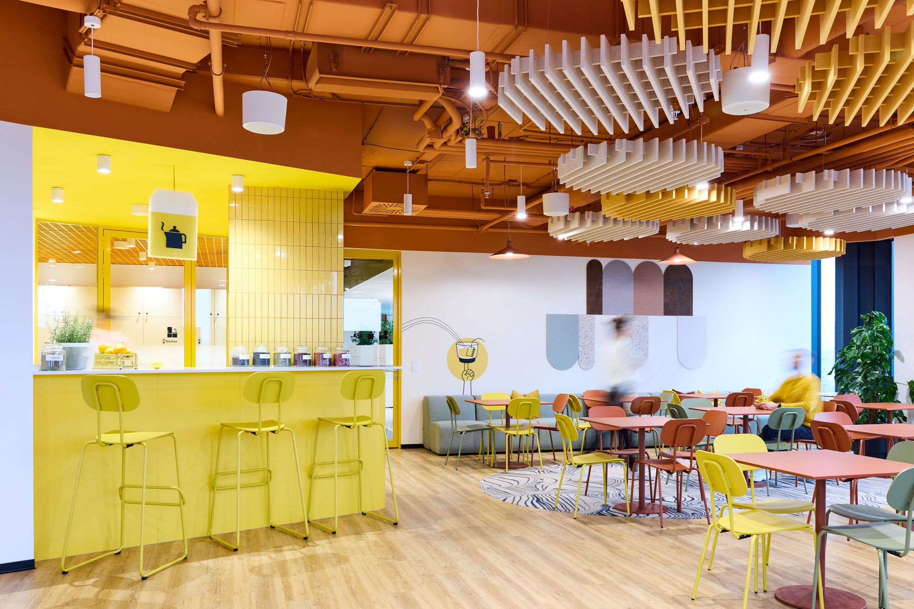
Nr 001 / 2026 / Katowice
Lipton Teas & Infusions
Pracownia FOURTH / Powierzchnia 1 500 m² / Foto Bianka Gajdzińska
Katowickie centrum usług Lipton Teas and Infusions zaprojektowała pracownia FOURTH. Punktem wyjścia był wschód słońca jako źródło energii, co odpowiada nowemu, swobodniejszemu wizerunkowi marki.
Nr 002 - Heating technology
PL · KAT · 2026

Vaillant
Biuro Vaillant zajmuje 22. piętro budynku .KTW II w Katowicach. Firma chciała, by działało jako centrum technologiczne przyciągające specjalistów IT, a układ wspierał pracę hybrydową.
Nr 003
PL · WAW · 2026

Nr 003 / 2026 / Warszawa
Colliers
Pracownia Colliers Define / Foto Adam Grzesik
Nowa warszawska siedziba Colliers powstała według koncepcji „Newffice”, która łączy markę, biznes i relacje między ludźmi. Projekt przygotował zespół Colliers Define.
Nr 004
PL · WAW · 2026

Nr 004 / 2026 / Warszawa
Michelin
Pracownia Colliers Define / Powierzchnia 1 800 m² / Foto Adam Grzesik
Warszawskie biuro Michelin nawiązuje do marki obłymi formami przypominającymi opony, a elementy rodem z domu łagodzą jego biurowy charakter.
Nr 005
PL · WAW · 2026

Nr 005 / 2026 / Warszawa
Moët Hennessy Poland
Pracownia Colliers Define / Powierzchnia 450 m² / Foto Adam Grzesik
Warszawska siedziba Moët Hennessy Poland zamiast tradycyjnej recepcji ma przy wejściu część przypominającą salon pokazowy, z barem wyposażonym jak w lokalu gastronomicznym.
Nr 006 - Food / Beverage Services
PL · WAW · 2026

Nr 006 / 2026 / Warszawa
Sodexo
Pracownia HUKK.studio / Powierzchnia 1 600 m² / Foto Martyna Rudnicka
Biuro Sodexo w Warszawie zaprojektowało HUKK.studio. Wnętrze oparto na nieoczywistym zestawieniu kolorów i faktur, z myślą o wygodzie użytkowników.
Nr 007
PL · LDZ · 2026

Nr 007 / 2026 / Łódź
Tate & Lyle
Pracownia Colliers Define / Powierzchnia 2 000 m² / Foto Adam Grzesik
Łódzkie biuro Tate & Lyle odwołuje się do produktów firmy i do roślinności. Recepcję utrzymano w miękkich, neutralnych barwach, spójnych z oszczędnym stylem otwartych stref.
Nr 008 - fmcg / retail
PL · WAW · 2026

Nr 008 / 2026 / Warszawa
Green Caffè Nero
Pracownia Colliers Define / Powierzchnia 960 m²
Green Caffè Nero przeniosło biuro do budynku Saski Crescent przy parku Saskim w Warszawie i dostało 960 m² Zanim powstał projekt, zespół Colliers Define pytał menedżerów i pracowników, jak pracują i czego im brakuje.
Nr 009 - usługi biznesowe
PL · LDZ · 2026
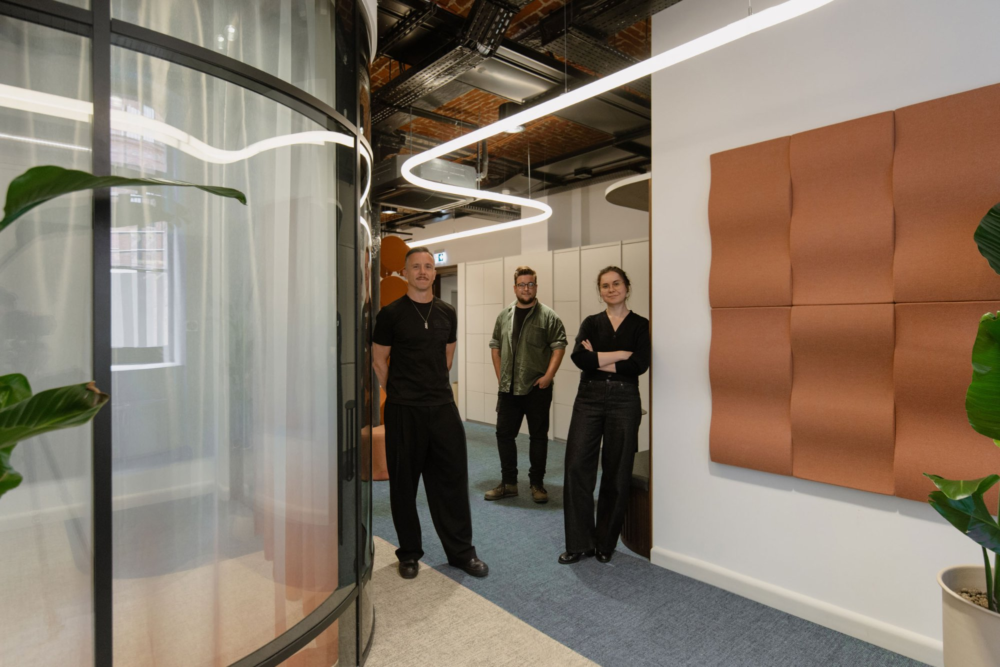
Nr 009 / 2026 / Łódź
Rekeep
Pracownia mode:lina / Powierzchnia 1 500 m² / Foto Patryk Lewiński
Kantor Poznańskiego powstał w drugiej połowie lat 80. XIX wieku jako część fabryczno-rezydencjonalnego zespołu Izraela Poznańskiego w Łodzi. Od stycznia 2026 roku pracuje tu Rekeep. Budynek jest pod opieką konserwatora, więc nowe salki i szklane podziały nie dotykają sufitów ani historycznych sztukaterii, a nowe drewno jest celowo ciemniejsze od odrestaurowanej stolarki.
Nr 010 - przemysł
PL · KRK · 2026

Nr 010 / 2026 / Kraków
Rolls-Royce plc
Pracownia Tetris Design + Build Polska / Powierzchnia 1 200 m²
Rolls-Royce zajął całe szóste piętro Unity Tower w Krakowie. Na ponad tysiącu metrów kwadratowych zmieściło się ponad 70 stanowisk w czterech strefach open space, osiem sal konferencyjnych, pokój rodzica z dzieckiem i kuchnia, w której zespół spotyka się w ciągu dnia. Całość, od stanu shell & core do przekazania kluczy, zajęła cztery miesiące.
Nr 011 - fmcg / retail
PL · WAW · 2026
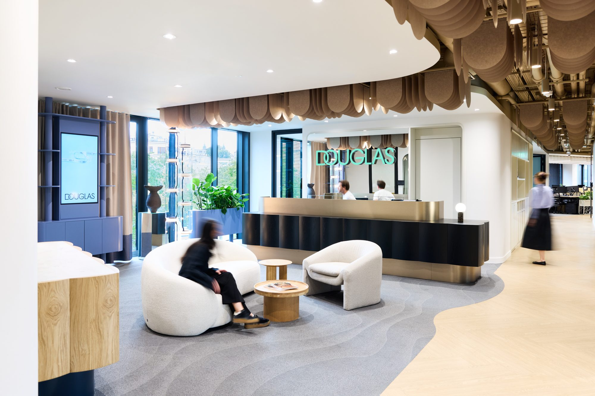
Nr 011 / 2026 / Warszawa
Douglas
Pracownia FOURTH / Powierzchnia 2 000 m² / Foto Bianka Gajdzińska
Douglas przejął w Warszawie biuro, które wcześniej zajmował ING, z wnętrzem zaprojektowanym przez mode:lina. Układ funkcjonalny wymagał tylko drobnych poprawek, więc zadaniem FOURTH była nowa koncepcja wnętrza, a nie przebudowa od zera. Po inwentaryzacji okazało się, że biuro jest w bardzo dobrym stanie technicznym: zostały sufity, przeszklone ściany, większość stolarki i część zabudów. Wymieniono wykładzinę, część opraw oświetleniowych i kuchnie.
Nr 012 - tech / it
PL · KAT · 2026
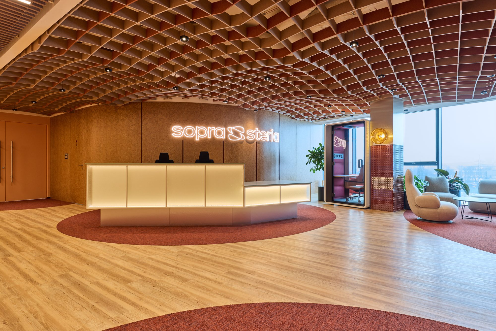
Nr 012 / 2026 / Katowice
Sopra Steria
Pracownia FOURTH / Powierzchnia 4 000 m² / Foto Bianka Gajdzińska
Sopra Steria Polska przez lata pracowała w starszym biurze w Katowicach. Nowa siedziba miała przekonać do przyjazdów zespół IT, który w większości pracuje zdalnie. FOURTH zaczął od doradztwa przy wyborze lokalizacji, padło na Grundmanna Office Park, a potem przeprowadził badania: ankietę wśród 693 pracowników, 14 wywiadów z kadrą zarządzającą i warsztaty z przedstawicielami 22 działów. Ponad 90% osób wolało pracę z domu.
Nr 013 - chemia / cleantech
PL · GDA · 2026
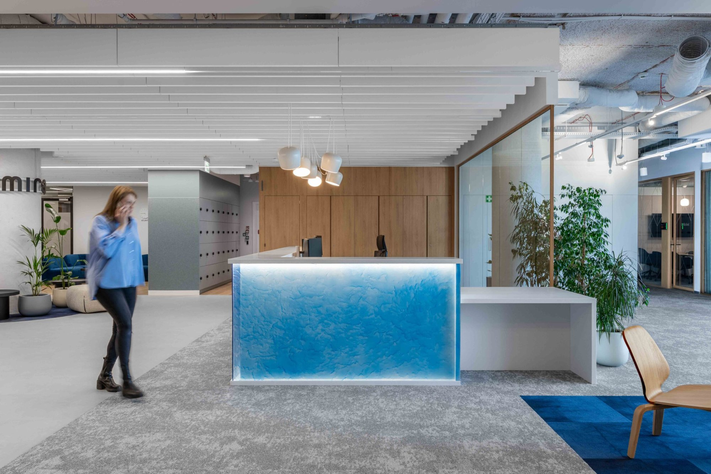
Nr 013 / 2026 / Gdańsk
Kemira
Pracownia The Design Group / Powierzchnia 2 100 m² / Budynek Alchemia
Kemira, fiński lider zrównoważonej chemii dla branż zużywających dużo wody, przeniosła siedzibę do gdańskiej Alchemii. The Design Group dostała gotowe biuro o powierzchni 2100 m² i miała dopasować je do nowego najemcy, bez burzenia wszystkiego.
Nr 014 - it / saas
PL · WAW · 2026
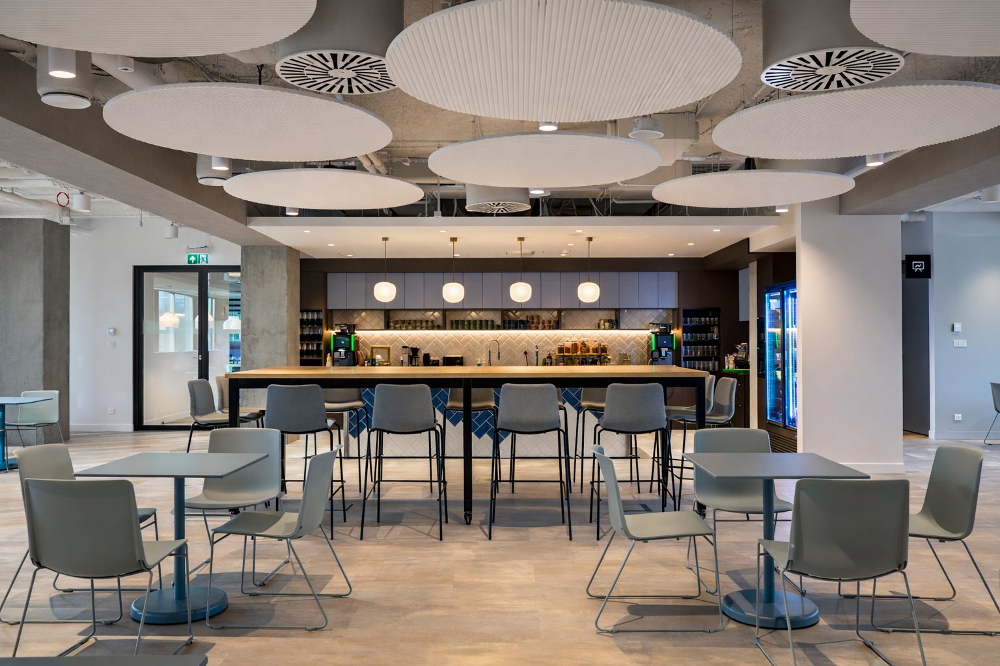
Nr 014 / 2026 / Warszawa
Asana
Pracownia The Design Group / Powierzchnia 2 700 m² / Budynek Lixa
Asana przejęła w Lixie gotowe, dobrze zaprojektowane biuro o powierzchni 2700 m². The Design Group zmieniła tylko to, co trzeba, i resztę zostawiła, co jest też dobre dla środowiska.
Nr 015 - real estate
PL · WAW · 2026
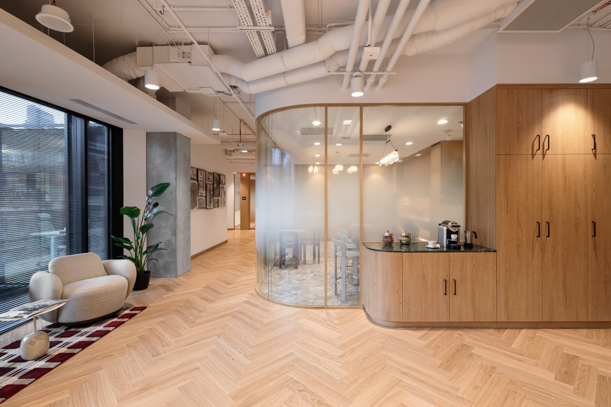
Nr 015 / 2026 / Warszawa
Yareal Polska
Pracownia The Design Group / Powierzchnia 750 m² / Budynek Lixa C
Siedziba dewelopera Yareal w kompleksie Lixa ma wyglądać jak jego mieszkania. Koncepcja nazywa się Modern Twist: wejście przypomina elegancki apartament albo kameralne lobby hotelowe, z dębowym parkietem w jodełkę, naturalnym kamieniem i ladą recepcji ze stali nierdzewnej.
Nr 016 - food / beverage
PL · WAW · 2026
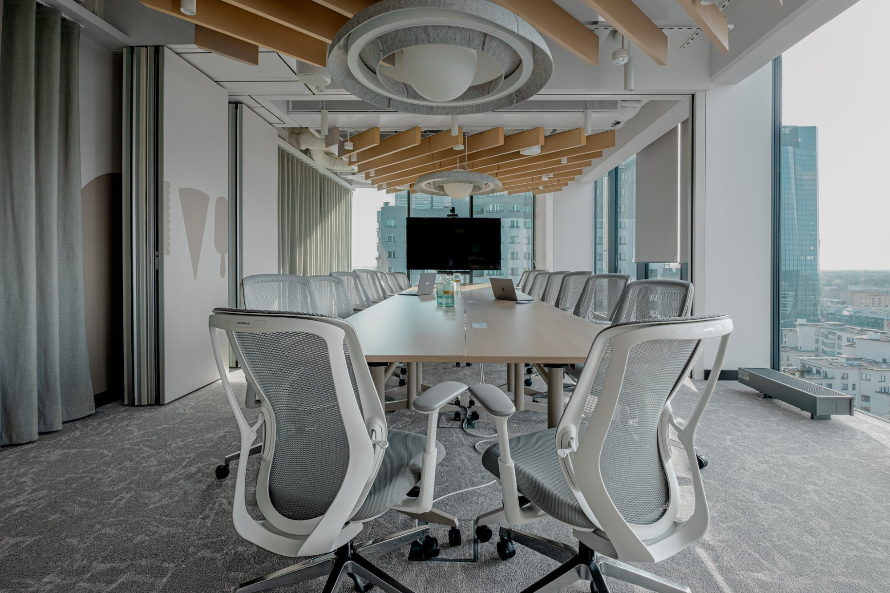
Nr 016 / 2026 / Warszawa
The Magnum Ice Cream Company
Pracownia The Design Group / Powierzchnia 550 m² / Budynek Studio A
Warszawskie biuro The Magnum Ice Cream Company ma koncepcję o nazwie Serious Playfulness. Od kremowej recepcji, przez wyraziste sale spotkań, po kuchnię i open space wnętrze prowadzi jak smak loda: od spokoju do koloru.
Nr 017 - e-commerce / technology
PL · LDZ · 2026
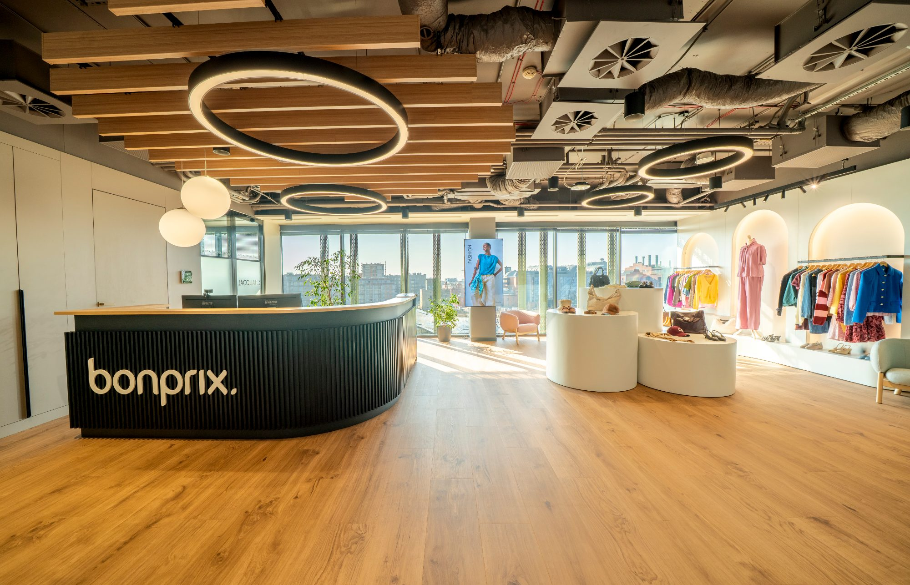
Nr 017 / 2026 / Łódź
Bonprix
Pracownia Brookfield Partners / Powierzchnia 2 392 m² / Budynek Nowa Fabryczna
Polska centrala bonprix, marki odzieżowej z grupy Otto, mieści się w Łodzi. Firma szukała biura, które pomoże jej przyciągać ludzi, i jednocześnie chciała obniżyć koszty. Wybrała piąte piętro Nowej Fabrycznej, 2 392 m².
Nr 018 - konsulting
PL · WAW · 2026
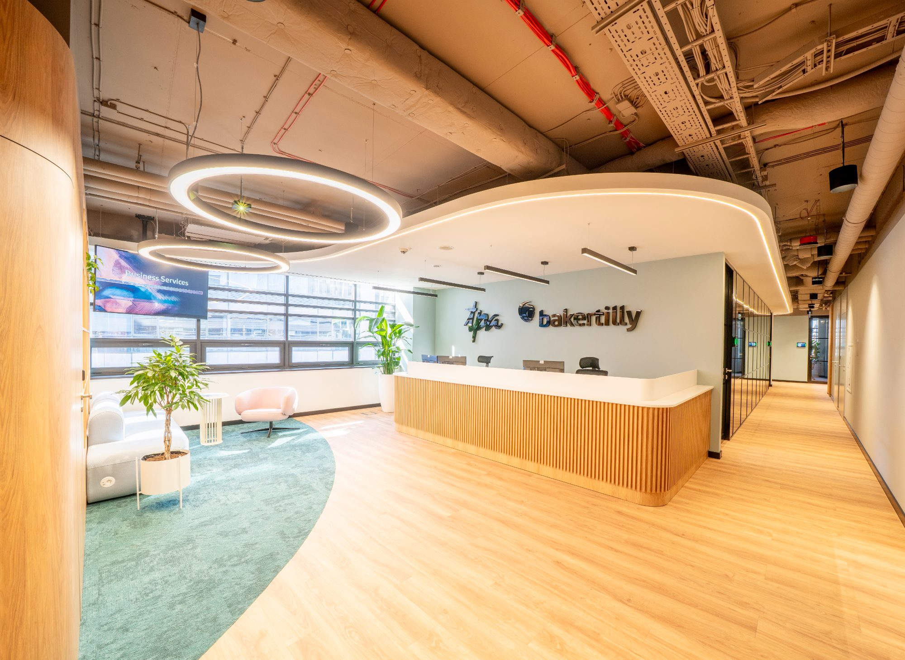
Nr 018 / 2026 / Warszawa
TPA Poland
Pracownia Brookfield Partners / Powierzchnia 2 079 m² / Budynek Wola Center
TPA Poland, firma audytorska i doradcza z sieci Baker Tilly, przez kilka miesięcy porównywała Wola Center z The Form i The Bridge. Ostatecznie została w Wola Center, renegocjowała umowę i przebudowała 2 079 m² tak, żeby dobrze się w nich pracowało i przyjmowało klientów.
Nr 019 - tech / r&d
PL · WRO · 2026
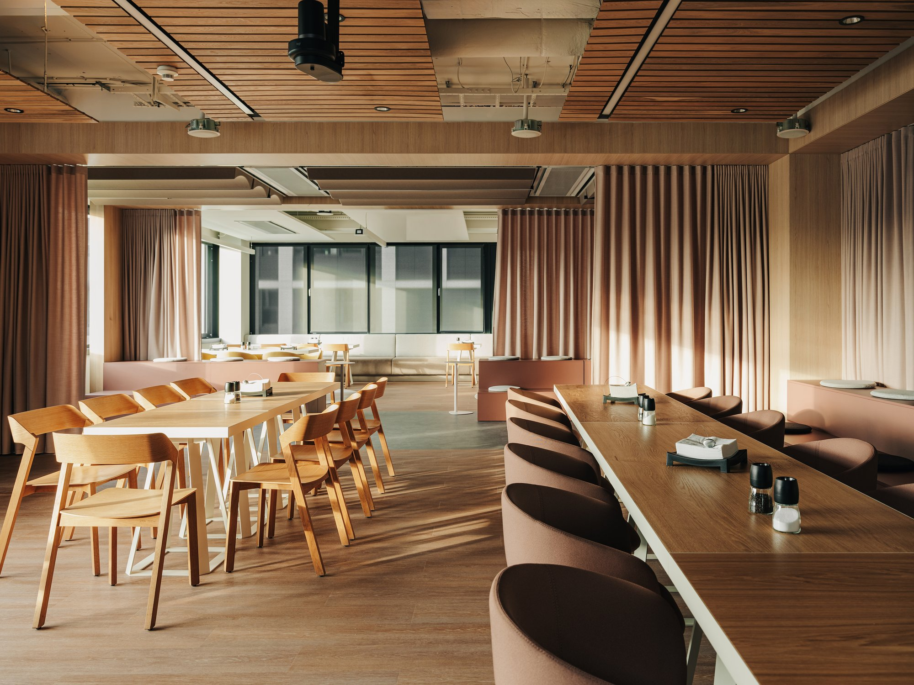
Nr 019 / 2026 / Wrocław
Dolby Poland
Pracownia CUDO Studio / Powierzchnia 2 900 m² / Budynek Business Garden
Dolby Poland ma we Wrocławiu centrum badawczo-rozwojowe i od lat zajmuje biura w kompleksie Business Garden przy Legnickiej. W 2026 roku firma przebudowała prawie 2 900 m² na dwóch piętrach według projektu pracowni CUDO, z myślą o pracy hybrydowej.
Nr 020 - konsulting
PL · WAW · 2025
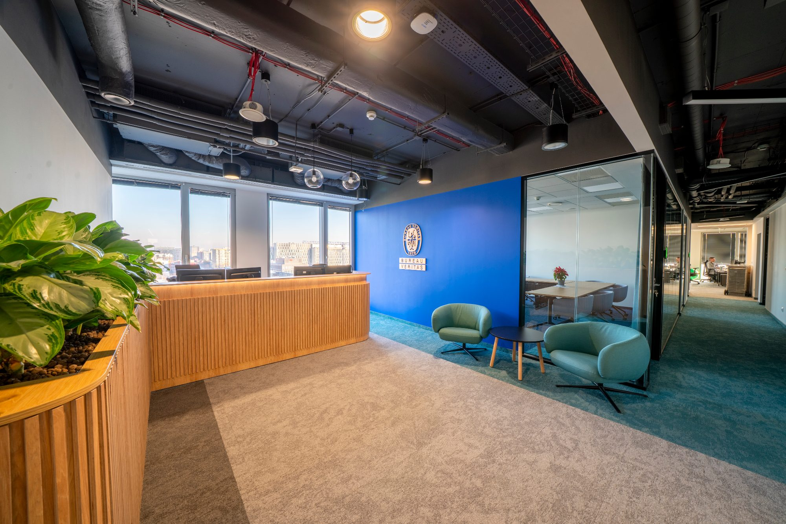
Nr 020 / 2025 / Warszawa
Bureau Veritas
Pracownia Brookfield Partners / Powierzchnia 1 000 m² / Budynek Platinium Business Park
Bureau Veritas, firma zajmująca się testami, inspekcjami i certyfikacją, założona w 1828 roku, przeniosła warszawski zespół do Platinium Business Park, na 1 000 m². Miało być miejsce i na wspólną pracę, i na zadania, które wymagają ciszy.
Nr 021 - logistyka / transport morski
PL · GDY · 2025

Nr 021 / 2025 / Gdynia
ATC CARGO
Pracownia HUKK.studio / Powierzchnia 1 800 m²
Biuro firmy logistycznej w Gdyni o powierzchni 1800 m2. Projekt obejmował warsztaty workplace, test-fit, koncepcję, projekt wykonawczy oraz wayfinding i spacebranding.
Nr 022 - Logistics / Ports
PL · KRK · 2025

Nr 022 / 2025 / Kraków / Zabytkowy budynek przy Galerii Kazimierz
OT Logistics
Pracownia Joanna Kłusak (pracownia architektoniczna) / Budynek Zabytkowy budynek przy Galerii Kazimierz / Foto Tomasz Prokop
W zaledwie trzy miesiące architektka Joanna Kłusak przekształciła surową przestrzeń zabytkowego budynku przy Galerii Kazimierz w funkcjonalne, nastrojowe biuro OT Logistics. Projekt harmonijnie łączy portowe DNA firmy z...
Nr 023 - IT / SaaS
PL · KRK · 2025

Vercom S.A. & cyber_Folks
Krakowska siedziba Vercom S.A. i cyber_Folks została zaprojektowana tak, by wspierać pracę głęboką i ograniczać przebodźcowanie. Zamiast klasycznego open space'u postawiono na kameralne strefy, akustykę i biophilic design.
Nr 024 - Retail
PL · PSC · 2025

Nr 024 / 2025 / Piaseczno / Centrum logistyczne / siedziba
Auchan Polska
Pracownia Tétris Poland (Sylwia Drążkiewicz-Kuczyńska, Aleksandra Wyczółkowska-Gajowniczek) / Powierzchnia 770 m² / Budynek Centrum logistyczne / siedziba / Foto Szymon Polański
Biura w obiektach logistycznych mogą być nowoczesne i komfortowe. Przykładem jest nowa siedziba Auchan powstała przy niedawno otwartym centrum dystrybucyjnym Auchan w Wilczej Górze.
Nr 025 - inne
PL · POZ · 2025
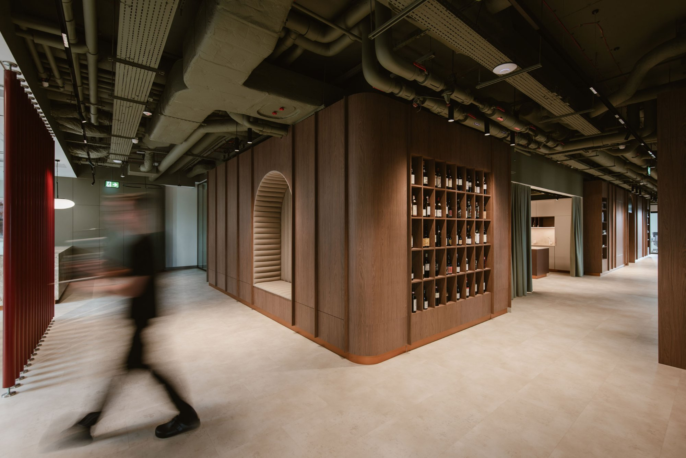
Nr 025 / 2025 / Poznań
MJG
Pracownia mode:lina / Powierzchnia 620 m² / Foto Patryk Lewiński
Biuro współdzielone trzech spółek: MJG, INDEX FOOD i VININOVA. Lipiec 2025. ul. Wujka 9, Poznań, 620 m².
Nr 026 - Coworking / Flex
PL · WAW · 2025

Nr 026 / 2025 / Warszawa / Portfel Globalworth (~580 tys. mkw.)
Ace of Space (Globalworth)
Pracownia Globalworth in-house / Budynek Portfel Globalworth (~580 tys. mkw.)
Rynek elastycznych powierzchni biurowych wciąż dynamicznie się rozwija. Elastyczne powierzchnie biurowe stały się integralną częścią rynku biurowego.
Nr 027
PL · WAW · 2025

Nr 027 / 2025 / Warszawa
Axpo Polska
Pracownia BIT Creative / Powierzchnia 1 484 m² / Foto Fotomohito
Biuro Axpo Polska na 25. piętrze warszawskiego wieżowca zaprojektowało BIT Creative. Wnętrze nawiązuje do energii i zrównoważonego rozwoju, z naturalnym drewnem, mchem i dużą ilością zieleni.
Nr 028 - fmcg / tobacco services
PL · WAW · 2025
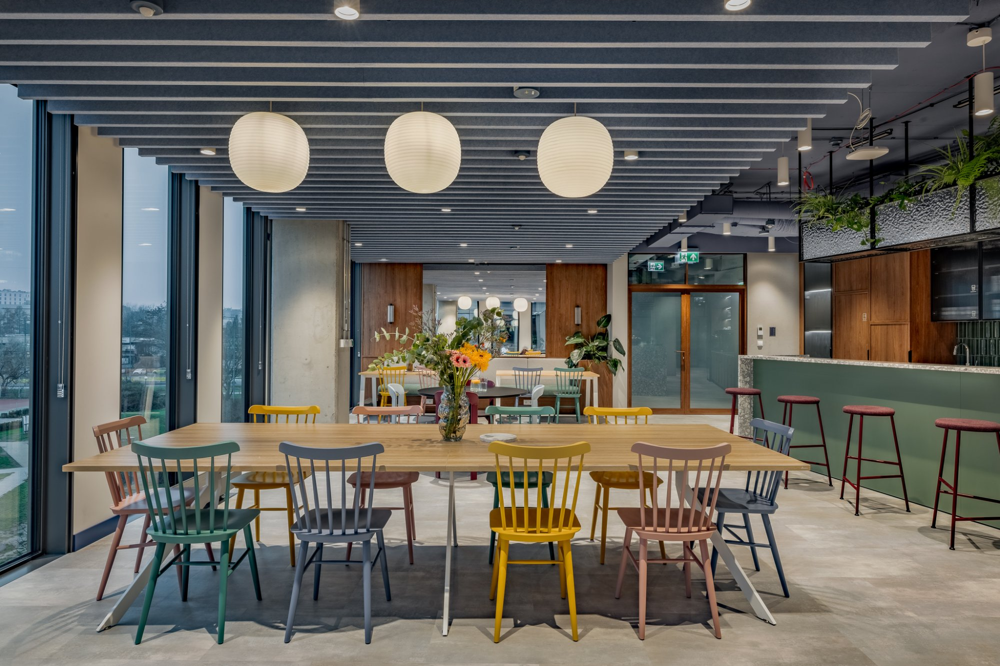
Nr 028 / 2025 / Warszawa
BAT DBS Poland - faza II (WOW!Hub)
Pracownia The Design Group / Powierzchnia 4 000 m² / Budynek P180, ul. Puławska 180
Druga faza WOW!Hub dla BAT DBS powstała na innym piętrze P180 przy Puławskiej 180, rok po pierwszej. Wygląda podobnie, ale dokłada funkcje, których brakowało.
Nr 029 - cosmetics / fmcg
PL · WAW · 2025

Nr 029 / 2025 / Warszawa
Beiersdorf Polska (Nivea)
Pracownia Trzop Architekci / Powierzchnia 340 m² / Foto Tétris Poland (mat. prasowe)
Beiersdorf Polska ma nową przestrzeń biurową w najwyższym budynku UE. Zaglądamy do siedziby producenta kosmetyków Nivea.
Nr 030 - Gaming / Tech
PL · WAW · 2025

Nr 030 / 2025 / Warszawa / Nowy budynek na kampusie przy ul. Jagiellońskiej (proj. Medusa Group)
CD PROJEKT RED
Pracownia MXCF Architekci (Marta Chrzanowska, Marcin Ferenc) / Powierzchnia 4 000 m² / Budynek Nowy budynek na kampusie przy ul. Jagiellońskiej (proj. Medusa Group) / Foto Nate Cook Photography
Tak wygląda nowe biuro CD PROJEKT RED w Warszawie. Wnętrza projektu MXCF Architekci to elastyczna przestrzeń z nawiązaniami do poprzemysłowej okolicy, dużo zieleni i intensywnie czerwona klatka schodowa.
Nr 031 - usługi prawne
PL · WAW · 2025

Clyde & Co
Biuro kancelarii Clyde & Co w The Form. Modernistyczne inspiracje warszawskimi kamienicami z lat 30. Lada recepcyjna z kamienia z poprzedniej lokalizacji, ręcznie formowane kafle z Nakomiad, fotele Egg Arne Jacobsena.
Nr 032 - Construction / GC
PL · WAW · 2025

Doraco
Na siódmym piętrze z widokiem na Park Saski i ul. Marszałkowską w Warszawie powstało nowe biuro firmy Doraco. Za projekt odpowiada Pik Studio, które postawiło na funkcjonalizm, naturalne materiały i futurystyczne detale.
Nr 033 - FMCG / Confectionery
PL · WAW · 2025

Nr 033 / 2025 / Warszawa
Dr Gerard (Adam Foods)
Pracownia Abundo Space (Małgorzata Kopyt) / Foto Abundo Space
Dr Gerard to jedna z najbardziej rozpoznawalnych marek słodyczy w Polsce, należąca do Grupy Adam Foods. Firma postanowiła odmienić biuro w Warszawie.
Nr 034
PL · WAW · 2025
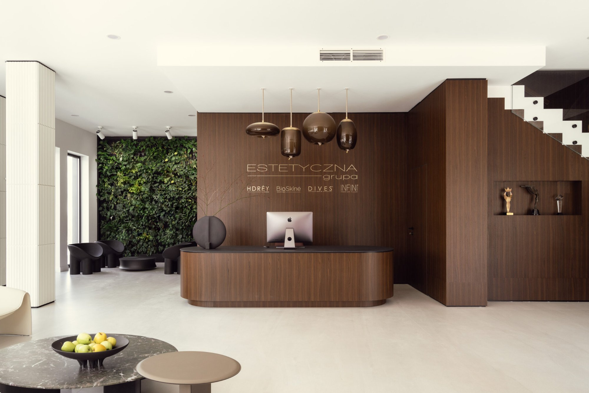
Nr 034 / 2025 / Warszawa
Estetyczna Grupa
Pracownia Art'Up Interiors / Foto Ład Studio
Siedziba HDRÈY Group (do niedawna Estetyczna Grupa) pod Warszawą to projekt Piotra Łucyana z Art'Up Interiors. Wnętrza odwołują się do modernizmu i stylu lat 60., z fornirami, kamieniem i skórą.
Nr 035 - Prawo
PL · WAW · 2025

Greenberg Traurig
Kancelaria Greenberg Traurig zajmuje biuro w Varso Tower zaprojektowane przez BIT Creative. Wnętrza łączą kamień, drewno i miedź ze sztuką współczesną.
Nr 036 - Food & Beverage
PL · WAW · 2025
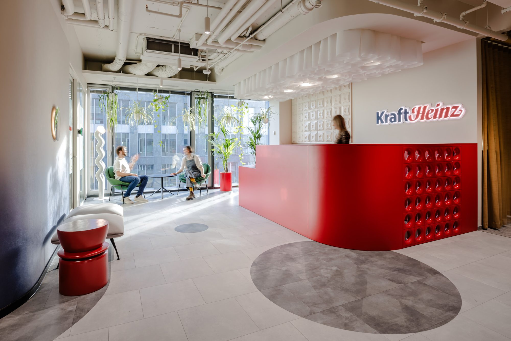
Kraft Heinz
Warszawskie biuro Kraft Heinz zajmuje półtora piętra w Harmony Office Park. Pracownia FOURTH oparła projekt na identyfikacji marki i ponownie wykorzystała część wyposażenia z poprzedniej siedziby.
Nr 037 - Insurance / Consulting
PL · WAW · 2025

Marsh McLennan (Marsh, Mercer, Guy Carpenter, Oliver Wyman)
Biuro Grupy Marsh McLennan w warszawskim budynku Nimbus jest jak nowe. Projekt objął pięć kondygnacji o pow. 5,3 tys. mkw., wprowadzając nowoczesne rozwiązania funkcjonalne, poprawę akustyki i przestrzenie sprzyjające integracji.
Nr 038
PL · WAW · 2025

Nr 038 / 2025 / Warszawa
Mat-Pras Logistic
Pracownia BIT Creative / Foto Fotomohito
Biuro firmy Mat-Pras Logistic w Warszawie urządzono w stylu loftowym. Beton, szkło i metal przełamano drewnem, zielenią i czerwonymi akcentami.
Nr 039 - Design
PL · WAW · 2025

Nr 039 / 2025 / Warszawa / Hines-managed building
Mute
Pracownia Mute (Pawel Panek, Dominika Niewczas-Januszek) / Powierzchnia 840 m² / Budynek Hines-managed building / Foto courtesy of Mute
Pierwsze w Europie biuro zbudowane w pelni z systemu modularnego - w dwa tygodnie, bez odpadow remontowych i emisji CO2.
Nr 040
PL · WAW · 2025

Nr 040 / 2025 / Warszawa
Omnires
Pracownia Loskiewicz.Studio / Powierzchnia 350 m² / Foto zasoby studio
Biuro Omnires, producenta armatury łazienkowej i kuchennej, mieści się w kompleksie The Park w Warszawie. Loskiewicz.Studio oparło projekt na motywie płynącej wody.
Nr 041 - Real estate
PL · WAW · 2025

Rock Capital
Rock Capital przeniósł siedzibę do budynku Metropolitan przy placu Piłsudskiego. Projekt BIT Creative łączy stonowane wnętrza z wyrazistymi obrazami Łukasza Stokowskiego, namalowanymi dla tego biura.
Nr 042 - enterprise software
PL · WAW · 2025

Nr 042 / 2025 / Warszawa
SAP Polska
Pracownia Massive Design / Foto Szymon Polański
Po 20 latach SAP przeniósł się do Varso. Strefa reprezentacyjna + strefa do pracy hybrydowej, sala klubowa, pokój dziennej opieki nad dzieckiem.
Nr 043 - Alkohole / FMCG
PL · WAW · 2025
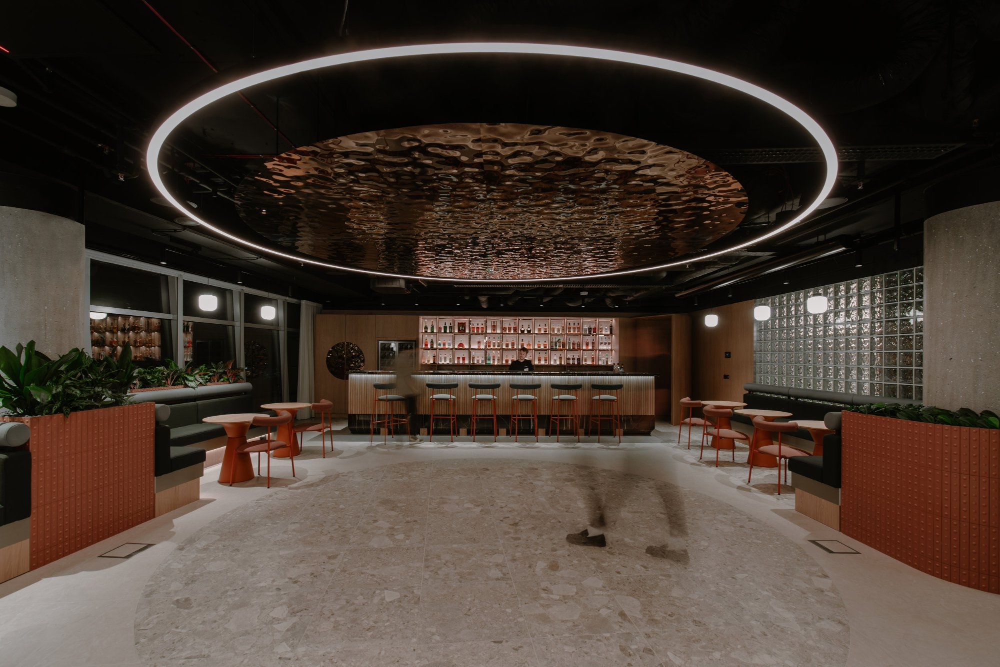
Wyborowa Pernod Ricard
Spektakularna modernizacja biura Wyborowa Pernod Ricard w warszawskim Lumen - szklane cegły, falująca miedziana blacha i marmurowy bar 4m inspirowany kadziami destylacyjnymi. Wnętrze łączące elegancję, naturalne materiały i hybrydowy model pracy.
Nr 044
PL · WRO · 2025

Nr 044 / 2025 / Wrocław / Brochów
Helio S.A.
Pracownia SAAN Architekci / Powierzchnia 4 088 m² / Budynek Brochów / Foto Tom Kurek
Siedziba producenta żywności Helio we wrocławskim Brochowie to projekt SAAN Architekci. Wnętrza łączą naturalne drewno z granatem i czernią.
Nr 045 - Finanse
PL · WRO · 2025

Nr 045 / 2025 / Wrocław
KRUK
Pracownia BIT Creative / Powierzchnia 6 000 m² / Foto Fotomohito
Wrocławska siedziba KRUK łączy cegłę, drewno, zieleń i czerwień. Każde piętro ma inny temat, od natury przez zjawiska pogodowe po sam Wrocław.
Nr 046 - coworking
PL · WRO · 2025
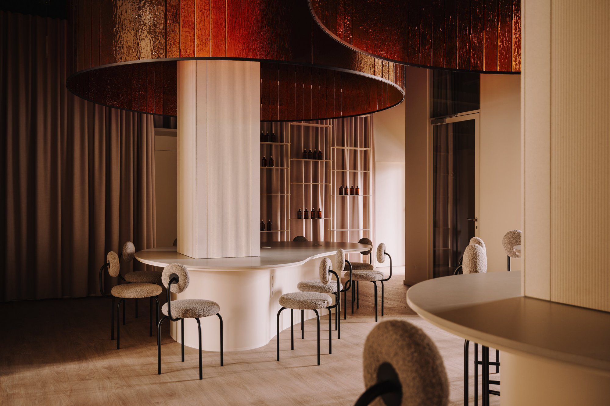
Nr 046 / 2025 / Wrocław
L'abo (by L'UNI)
Pracownia CUDO Studio / Budynek Dawny Wydział Farmacji
W zabytkowym budynku dawnego Wydziału Farmacji we Wrocławiu powstała przestrzeń L'abo. To projekt wnętrz autorstwa pracowni CUDO, w którym elegancja, rzemiosło i lokalny kontekst spotykają się w harmonijnej kompozycji.
Nr 047 - Energia odnawialna
PL · WRO · 2025
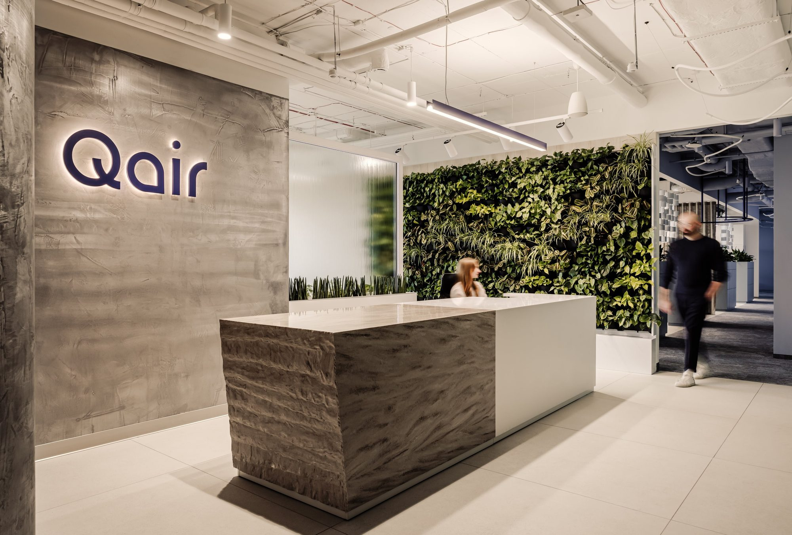
Nr 047 / 2025 / Wrocław
Qair
Pracownia FOURTH / Powierzchnia 1 600 m² / Foto Adam Grzesik
Nowa wrocławska siedziba Qair zebrała w jednym miejscu zespoły, które wcześniej pracowały osobno. FOURTH przełożył na wnętrze wodę i wiatr, z którymi firma pracuje na co dzień.
Nr 048 - prawo
PL · WAW · 2025

Nr 048 / 2025 / Warszawa
Baker McKenzie
Pracownia BIT Creative / Powierzchnia 4 000 m² / Foto Fotomohito
Baker McKenzie zajął trzy najwyższe kondygnacje Varso Tower, ponad 4000 m². Kancelaria ma dwa ważne dla siebie miejsca, Japonię i Nowy Jork, i z nich BIT Creative ułożyła wnętrze: spokój japandi przecina się tu z miejską energią.
Nr 049 - tech / it
PL · WAW · 2025

Nr 049 / 2025 / Warszawa
GN Group
Pracownia BIT Creative / Powierzchnia 2 000 m²
GN Polska przeniosła się do Saski Crescent przy Królewskiej. Na 2000 m² pracuje około stu osób, a BIT Creative oparła projekt na skandynawskim podejściu do pracy i na rozwiązaniach znanych z coworkingów.
Nr 050 - finanse
PL · WAW · 2025

Nr 050 / 2025 / Warszawa
Danske Bank
Pracownia Tetris Design + Build Polska / Powierzchnia 1 200 m²
Polski oddział duńskiego Danske Bank pracuje na 1200 metrach kwadratowych w budynku Lumen. Projekt i realizacja trwały pięć miesięcy, a klient był otwarty na pomysły dalekie od biurowego szablonu.
Nr 051 - real estate
PL · WAW · 2025

Nr 051 / 2025 / Warszawa
JLL
Pracownia Tetris Design + Build Polska / Powierzchnia 6 000 m²
JLL przebudował swoją siedzibę w Warsaw Spire i zmniejszył ją z 13 do 6 tysięcy metrów kwadratowych. Firma zrobiła to własnymi siłami: pracowały przy tym zespoły Workplace Advisory, Project and Development Services, Work Dynamics i projektanci Tétris. Prace trwały dziewięć miesięcy, piętro po piętrze, bez zamykania biura.
Nr 052 - tech / it
PL · WAW · 2025

Nr 052 / 2025 / Warszawa
Emagine
Pracownia Trzop Architekci / Foto Michał Jaroń
Emagine ma warszawskie biuro w budynku The Form. Projekt powstał w 2024 roku, realizację skończono w 2025.
Nr 053 - przemysł
PL · SWK · 2025
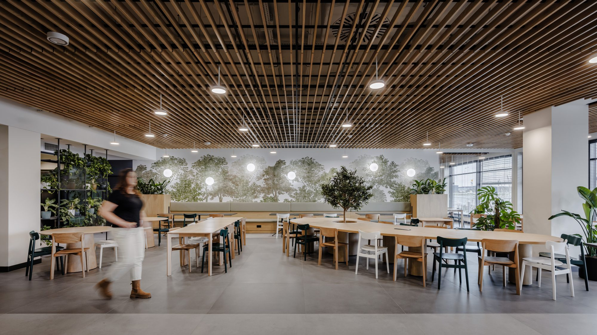
Nr 053 / 2025 / Świdnik
Trilux
Pracownia FOURTH / Powierzchnia 3 000 m²
Nowe biuro producenta oświetlenia Trilux w Świdniku zaprojektowała pracownia FOURTH. Ma około 3000 m², a jego centrum jest stołówka pod drewnianym sufitem.
Nr 054 - healthcare / pharma
PL · WAW · 2025
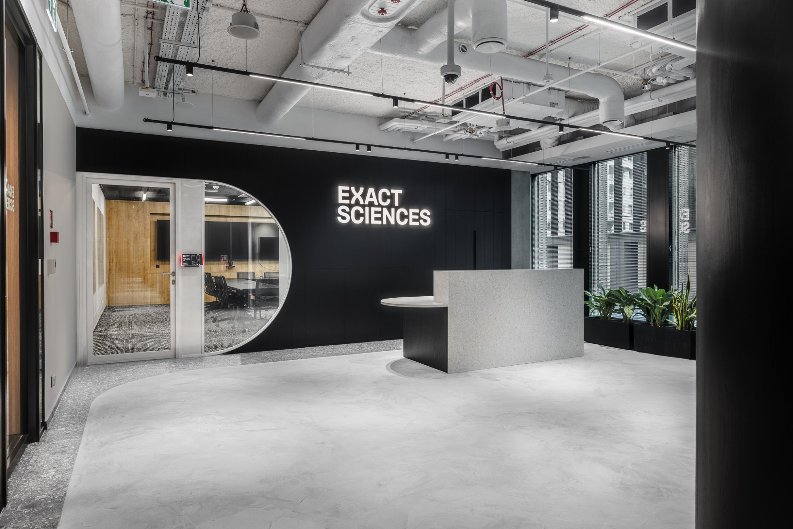
Nr 054 / 2025 / Warszawa
Exact Sciences
Pracownia The Design Group / Powierzchnia 1 600 m² / Budynek Lixa D
Exact Sciences to amerykańska firma biomedyczna, a jej warszawskie biuro w Lixie musiało zmieścić się w globalnych wytycznych marki. The Design Group potraktowała te ograniczenia jak materiał do pracy.
Nr 055 - finanse
PL · WAW · 2025
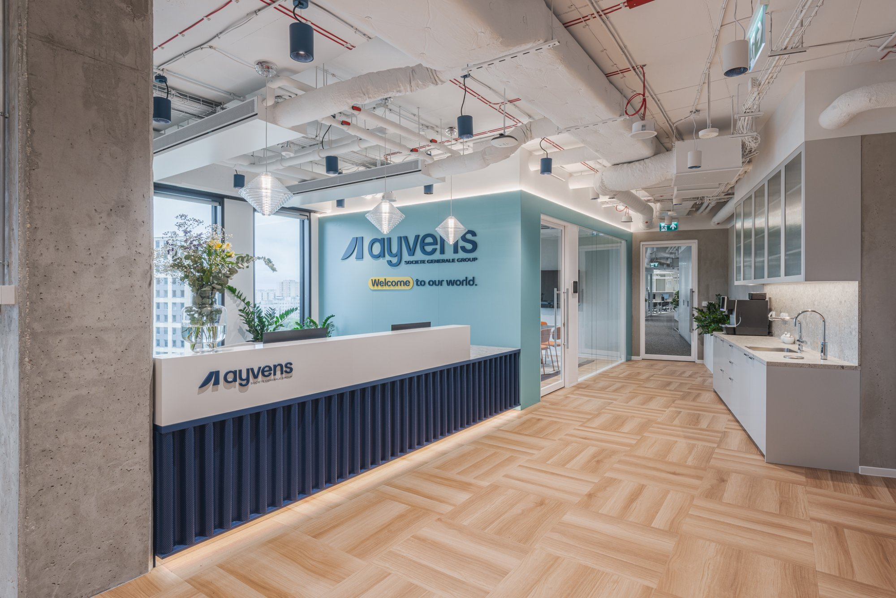
Nr 055 / 2025 / Warszawa
Ayvens
Pracownia The Design Group / Powierzchnia 2 000 m² / Budynek P180
Ayvens zajmuje ponad 2000 m² na dziewiątym piętrze P180, z widokiem na cały Mokotów. Biuro działa w modelu full flex: nikt nie ma przypisanego biurka ani gabinetu.
Nr 056 - real estate
PL · WAW · 2025
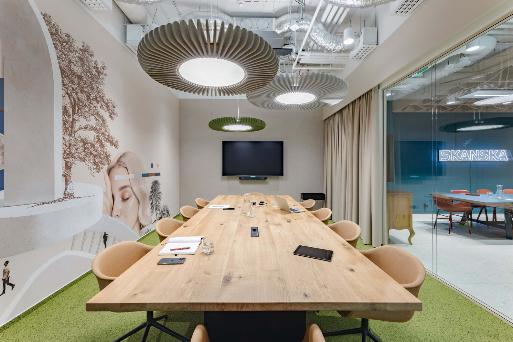
Nr 056 / 2025 / Warszawa
Skanska (showroom Studio)
Pracownia The Design Group / Powierzchnia 100 m² / Budynek Studio B
Na około 100 m² w Studio B przy Łuckiej Skanska pokazuje najemcom wieżę Studio A. The Design Group zaprojektowała showroom tak, by każdy metr dało się wykorzystać na kilka sposobów.
Nr 057 - Pharma / Agro
PL · GDN · 2024

Bayer
Biuro jednego z najstarszych rezydentów Olivia Centre w Gdańsku przeszło niedawno metamorfozę. Dostosowane do najnowszych trendów biuro grupy Bayer powstało w duchu less waste, a opiera się na nowej strategii przestrzeni pracy,...
Nr 058 - doradztwo / certyfikacja
PL · GDY · 2024

DNV
Biuro DNV, firmy zajmującej się klasyfikacją i certyfikacją, mieści się w gdyńskim Łużycka Office Park. Projekt przygotowała pracownia Forbis Group.
Nr 059 - tech / science
PL · KRK · 2024
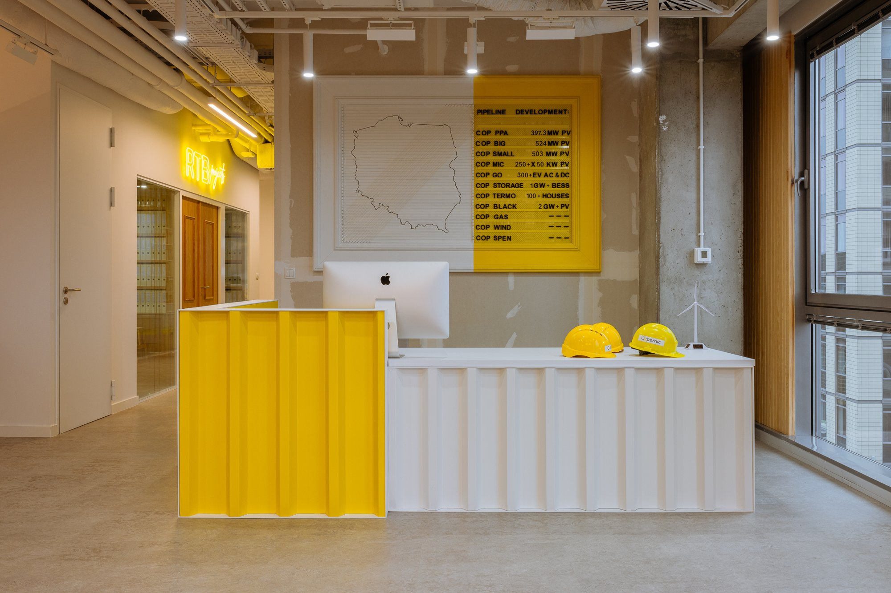
Nr 059 / 2024 / Kraków
Copernic
Pracownia Superpozycja Architekci (Dominika Trzcińska) / Powierzchnia 800 m² / Budynek Pascal (Korona Office Complex)
Copernic, firma z branży odnawialnych źródeł energii, wybrała projektantów swojego krakowskiego biura w wewnętrznym konkursie. Superpozycja Architekci wygrali go z trzema dużymi pracowniami i zaprojektowali 800 m² dla 80 osób w budynku Pascal, części Korona Office Complex.
Nr 060 - Real estate consulting
PL · KRK · 2024

JLL & Tétris
Projekt biura JLL i Tétris w krakowskim Unity Center obejmował adaptację 200 mkw, czyli jednego piętra, z podziałem na dwie strefy. Wprowadzono neutralną i szlachetną paletę kolorystyczną. Projekt charakteryzuje się dużą ilością...
Nr 061 - Industrial / B2B Distribution
PL · PL · 2024

Nr 061 / 2024 / Gliwice / Gambit Office (biuro + magazyn)
Gambit Systems
Pracownia Robert Konieczny + KWK Promes / Powierzchnia 1 285 m² / Budynek Gambit Office (biuro + magazyn) / Foto Juliusz Sokołowski
Gambit, firma dystrybuująca specjalistyczne rury, zleciła zaprojektowanie budynku biurowo-magazynowego, który miał być jej unikalną wizytówką - przy najniższych możliwych kosztach. Wpadliśmy na pomysł użycia materiału, którym...
Nr 062 - Legal
PL · POZ · 2024

Nr 062 / 2024 / Poznań
CMS Poland
Pracownia Projektika.Interior / Powierzchnia 420 m² / Foto fotomohito
Siedziba CMS Poland w Poznaniu przeszła metamorfozę spod kreski pracowni Projektika.Interior. Powierzchnia ok. 420 mkw. przeszła kompleksową metamorfozę. Nadrzędnym celem było stworzenie miejsca, które zachęca do spędzania w nim...
Nr 063 - architecture
PL · POZ · 2024
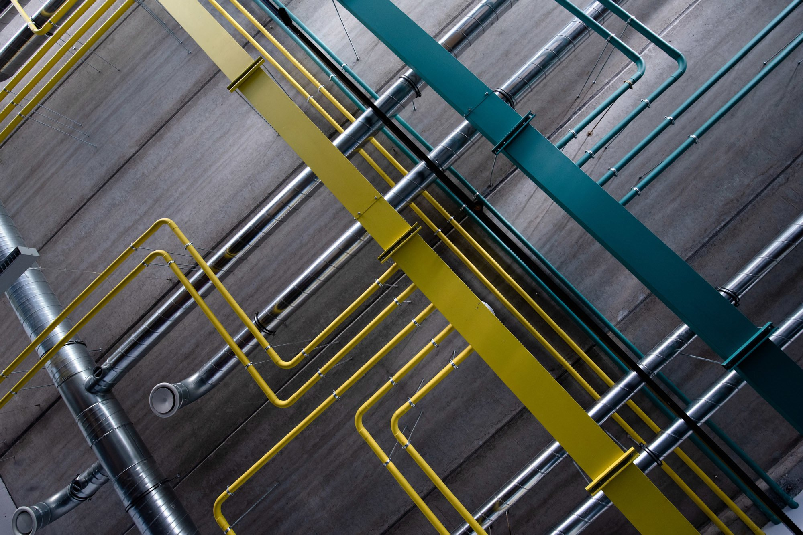
Nr 063 / 2024 / Poznań
Demiurg
Pracownia mode:lina / Powierzchnia 400 m² / Foto Patryk Lewiński
Poznańska siedziba firmy budowlanej Demiurg, z wnętrzami pracowni mode:lina, eksponuje surową konstrukcję budynku. Tuż obok stoi przedwojenny bunkier, odkryty podczas wykopów pod fundamenty.
Nr 064 - Agriculture
PL · POZ · 2024

KWS Polska
Firma z sektora rolniczego KWS Polska zajmuje biuro o powierzchni 470 mkw. w poznańskim biurowcu Giant Office. Za projektem wnętrz nowego biura stoi architekt Katarzyna Buczkowska-Grobecka z pracowni Ktura Architekci.
Nr 065 - inne
PL · POZ · 2024

Nr 065 / 2024 / Poznań
McKinsey
Pracownia Trzop Architekci / Powierzchnia 8 600 m² / Foto Fotomohito
Biuro McKinsey zajmuje pięć najwyższych pięter nowego budynku w kompleksie Nowy Rynek w Poznaniu. Projekt Trzop Architekci oparto na biofilii, a wnętrza spełniają wymagania certyfikatów LEED i WELL.
Nr 066 - fmcg / tobacco
PL · WAW · 2024
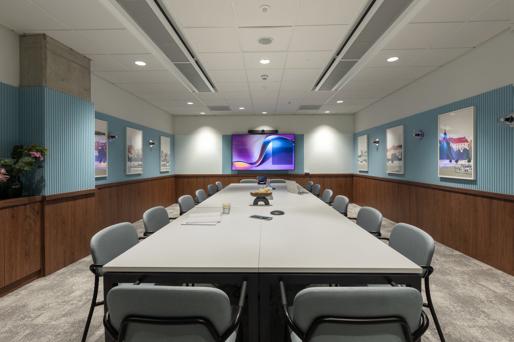
Nr 066 / 2024 / Warszawa
BAT DBS Poland (WOW!Hub)
Pracownia The Design Group / Powierzchnia 4 000 m² / Budynek P180 (Górny Mokotów)
WOW!Hub to biuro BAT DBS w P180 na Górnym Mokotowie, 4000 m² bez przypisanych biurek. Do wyboru są ciche stanowiska, biblioteka, focus roomy, budki telefoniczne i sale konferencyjne. Pracownicy firmy brali udział w projektowaniu.
Nr 067 - deweloper
PL · WAW · 2024

Bouygues Immobilier Polska
W sercu Warszawy, w prestiżowym biurowcu Rondo 1 przy Rondzie ONZ, znajduje się siedziba Bouygues Immobilier Polska - lidera francuskiego rynku nieruchomości. Biuro o powierzchni ponad 1300 m² to nie tylko nowoczesne miejsce...
Nr 068 - coworking
PL · WAW · 2024

Nr 068 / 2024 / Warszawa
Business Link
Pracownia Trzop Architekci / Foto Stanisław Zajączkowski
Kolejne przestrzenie coworkingowe sieci Business Link projektowane przez Trzop Architekci w Warszawie.
Nr 069 - Financial / Investments
PL · WAW · 2024

Nr 069 / 2024 / Warszawa
Citi Handlowy
Pracownia SAAN Architekci / Foto Piotr Krajewski
Centrala Citi Handlowy wyrozniona licznymi miedzynarodowymi nagrodami w 2024 - projekt zespolu SAAN pod kierownictwem Igi Sawickiej.
Nr 070
PL · WAW · 2024

Nr 070 / 2024 / Warszawa
Coca-Cola HBC
Pracownia BIT Creative / Powierzchnia 5 500 m² / Foto Fotomohito
Warszawska centrala Coca-Cola HBC zajmuje trzy piętra. BIT Creative użyło produktów firmy jako elementów wystroju, od lady recepcji w kształcie fali z wbudowanymi butelkami po ściany z kapsli.
Nr 071 - finanse
PL · WAW · 2024
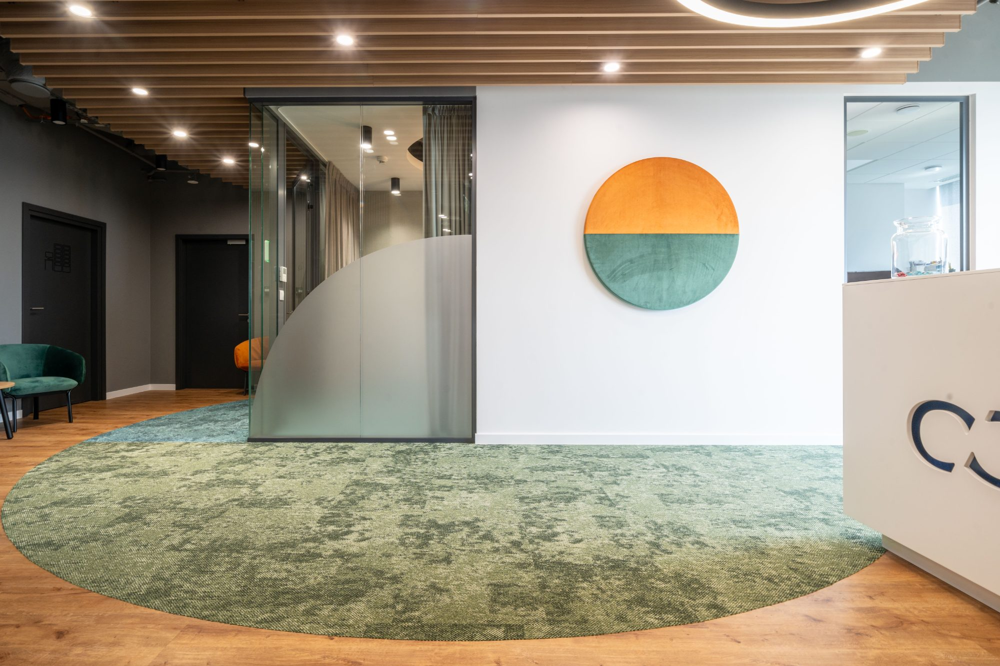
Nr 071 / 2024 / Warszawa
Coface
Pracownia Brookfield Partners / Powierzchnia 1 377 m² / Budynek West Station
Coface, ubezpieczyciel należności obecny na 200 rynkach, sprawdzał przeprowadzkę, ale po warsztatach z menedżerami i ankietach wśród pracowników został w West Station. Biuro zmniejszono do 1 377 m² i przestawiono na pracę hybrydową.
Nr 072 - Finance / Insurance
PL · WAW · 2024

Decerto
Biuro Decerto w Warszawie, z widokiem na kopułę Złotych Tarasów, zaprojektowało BIT Creative. Głównym motywem jest miedź zestawiona z szarym betonem.
Nr 073 - hr
PL · WAW · 2024
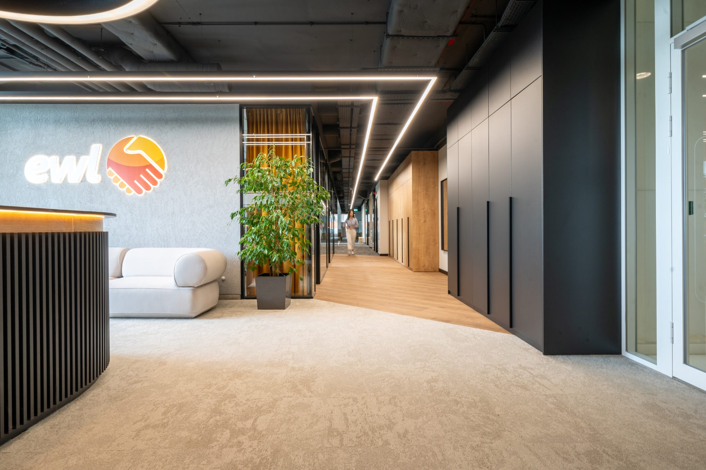
Nr 073 / 2024 / Warszawa
EWL
Pracownia Brookfield Partners / Powierzchnia 835 m² / Budynek Miasteczko Orange
EWL, agencja zatrudnienia, która od lat sprowadza do Polski pracowników z zagranicy, szukała 700 do 800 m² blisko Dworca Zachodniego. Z West Station przeniosła się na trzecie piętro Miasteczka Orange przy Alejach Jerozolimskich 160, na 835 m².
Nr 074 - imaging / tech
PL · WAW · 2024
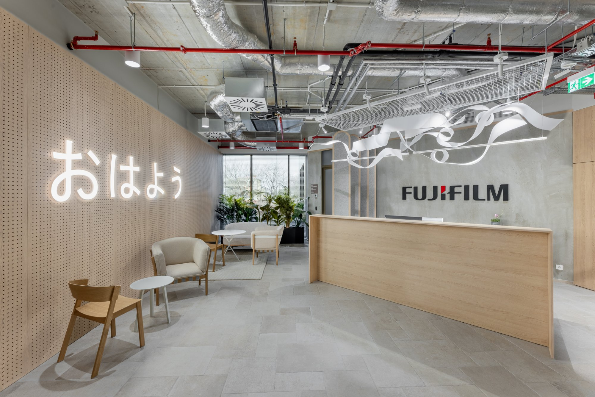
Nr 074 / 2024 / Warszawa
Fujifilm
Pracownia The Design Group / Powierzchnia 1 000 m² / Budynek The Park Warsaw
Biuro Fujifilm w budynku 7 kompleksu The Park Warsaw ma blisko 1000 m² i jest urządzone w stylu japandi. Ze względu na bliskość lotniska trzeba było spełnić ostre przepisy przeciwpożarowe, nie rezygnując z estetyki.
Nr 075 - Film / TV
PL · WAW · 2024

Nr 075 / 2024 / Warszawa
Good Morning Studio (Dzień Dobry TVN)
Pracownia Sikora Interiors / Powierzchnia 350 m² / Foto Tom Kurek
Studio programu Dzień Dobry TVN w Warszawie przeszło pełną przebudowę według projektu Sikora Interiors. Powstało jasne, loftowe wnętrze z nowym układem funkcjonalnym.
Nr 076 - Construction tech
PL · WAW · 2024

Hilti Polska
Nowe biuro Hilti Polska zostało zaprojektowane jako otwarta przestrzeń, w której zastosowano ciekawy zabieg aranżacyjny, symbolicznie dzielący ją na dwie równoległe części. Efekt ten uzyskano dzięki przeniesieniu nieregularnego...
Nr 077
PL · WAW · 2024

Nr 077 / 2024 / Warszawa
Hoogwegt
Pracownia BIT Creative / Powierzchnia 767 m²
Biuro dostawcy produktów mleczarskich Hoogwegt w Warszawie zaprojektowało BIT Creative. Wnętrza spaja granat i litera H z identyfikacji wizualnej firmy.
Nr 078 - Gaming
PL · WAW · 2024

Huuuge Games
Huuuge Games zajmuje trzy piętra w The Warsaw HUB. BIT Creative urządziło biuro w stylu soft loft, z cegłą, drewnem i szklanymi ścianami ze szprosami.
Nr 079 - it recruitment
PL · WAW · 2024
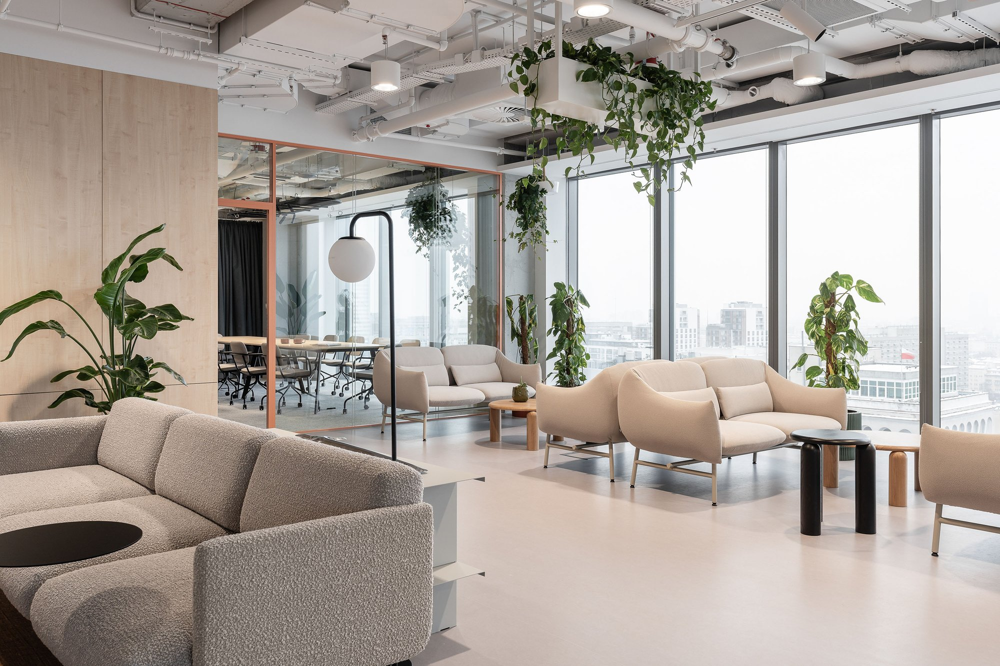
Nr 079 / 2024 / Warszawa
Just Join IT
Pracownia MXCF Architekci (Marta Chrzanowska, Marcin Ferenc) / Powierzchnia 1 700 m² / Budynek Central Point
Just Join IT, serwis z ofertami pracy dla branży IT, zajmuje piętra 15 i 16 biurowca Central Point w centrum Warszawy, razem 1 700 m². Biuro zaprojektowało MXCF Architekci, budowa trwała od 2023 do 2024 roku.
Nr 080 - IT / automotive software
PL · WAW · 2024

Nr 080 / 2024 / Warszawa
Keyloop
Pracownia Massive Design / Foto Szymon Polański
Transformacja biura globalnego dostawcy oprogramowania dla branży automotive. Przestrzeń przyciągająca i wspierająca codzienną pracę zespołów.
Nr 081 - FMCG / kosmetyki
PL · WAW · 2024

Nr 081 / 2024 / Warszawa
L'Oréal Innovation Atelier
Pracownia HUKK.studio / Powierzchnia 350 m²
Elastyczna, wielofunkcyjna przestrzeń biurowo-eventowa dla L'Oréal Poland-Baltic. Mobilne meble, rzeźbiarski sufit świetlny i stonowana paleta z metalicznymi akcentami tworzą luksusową wizytówkę marki.
Nr 082 - Healthcare
PL · WAW · 2024
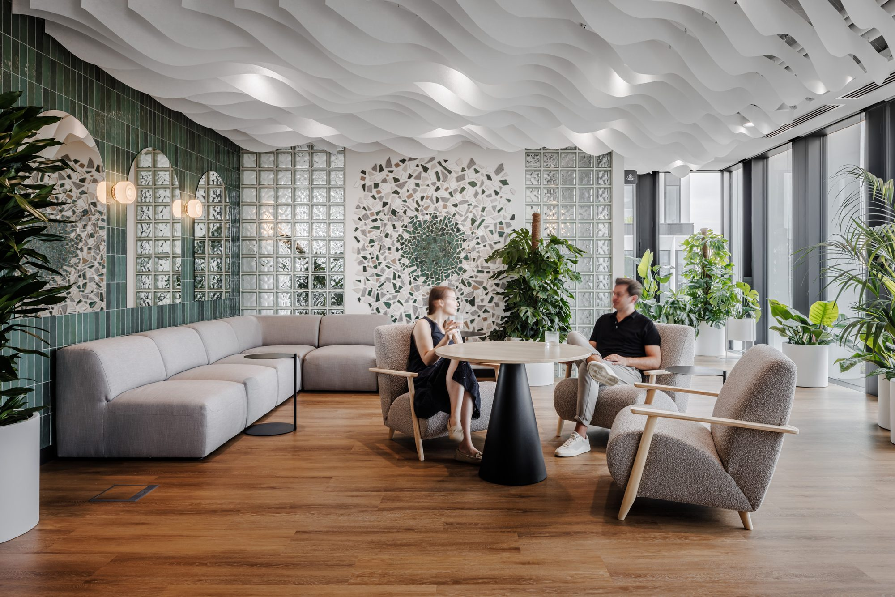
LUX MED
Nowa centrala LUX MED w budynku Lakeside zebrała pod jednym dachem działy, które wcześniej pracowały w kilku lokalizacjach. Projekt FOURTH poprzedziły badania potrzeb pracowników.
Nr 083 - Fashion / Toys
PL · WAW · 2024

Nr 083 / 2024 / Warszawa
Mattel
Pracownia BIT CREATIVE / Powierzchnia 650 m² / Foto Fotomohito
Warszawskie biuro Mattel zaprojektowało BIT Creative. Strefy wspólne i stanowiska pracy utrzymano w bieli i szarości, a kolory marek zabawek przeniesiono do sal spotkań.
Nr 084 - logistyka
PL · WAW · 2024
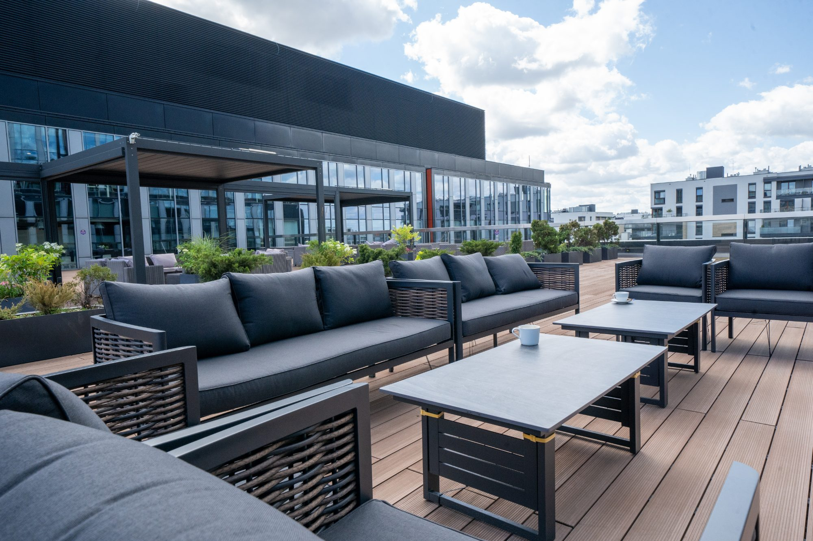
Nr 084 / 2024 / Warszawa
MSC Poland
Pracownia Brookfield Partners / Powierzchnia 840 m² / Budynek Postępu 14
MSC Poland, oddział największego armatora kontenerowego na świecie, działa w Polsce od 1998 roku. Kiedy firma zaczęła szybko zatrudniać, potrzebowała większego biura z dużą kuchnią i miejscem do odpoczynku. Wybrała Postępu 14, w dużej mierze ze względu na taras.
Nr 085 - Benefits / HR-tech
PL · WAW · 2024

Nr 085 / 2024 / Warszawa
Multilife (Benefit Systems)
Pracownia Concept Space / Foto mat. prasowe
Projekt dla działu MultiLife firmy Benefit Systems SA to nowoczesna przestrzeń biurowa łącząca funkcjonalność z inspirującym designem. Projektanci Concept Space stworzyli dwustrefową koncepcję obejmującą otwartą przestrzeń pracy...
Nr 086 - tech / it
PL · WAW · 2024
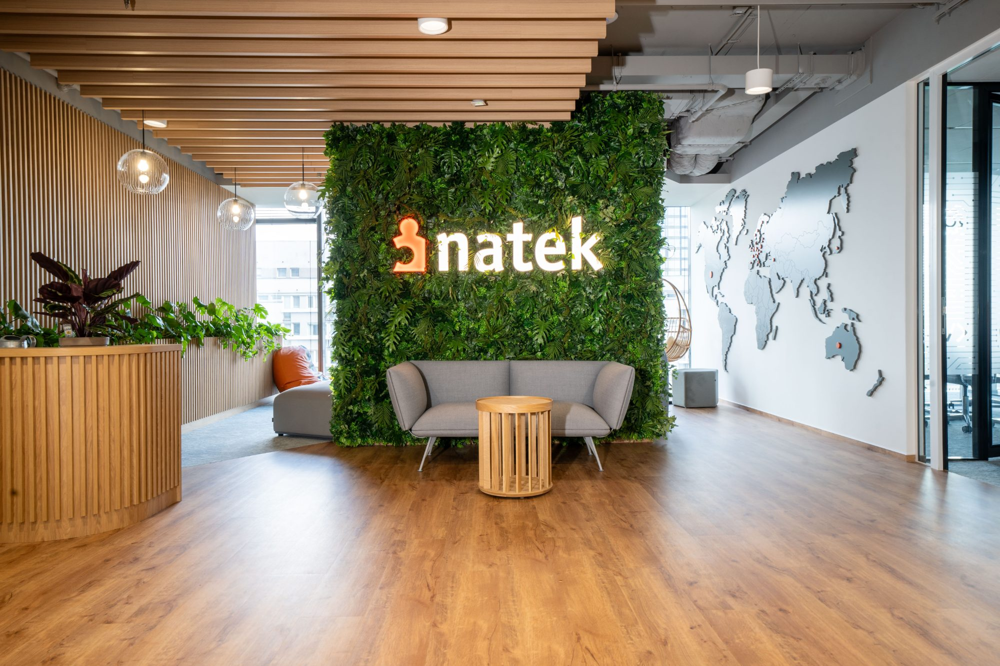
Nr 086 / 2024 / Warszawa
Natek
Pracownia Brookfield Partners / Powierzchnia 524 m² / Budynek Q22
Natek, firma z outsourcingu IT działająca od 2004 roku, potrzebowała większego biura blisko poprzedniego. Zajęła 524 m² w biurowcu Q22 w Warszawie. Otwarte później biuro we Wrocławiu urządzono w tym samym stylu.
Nr 087
PL · WAW · 2024

Nr 087 / 2024 / Warszawa
Netcompany
Pracownia BIT Creative / Powierzchnia 2 137 m² / Foto Fotomohito
Warszawskie biuro Netcompany zaprojektowało BIT Creative w duchu duńskiego hygge. Szarości ociepla drewno, a wnętrze miało zachęcić pracowników do powrotu do biura po pandemii.
Nr 088 - Energy / Mining / Oil
PL · WAW · 2024
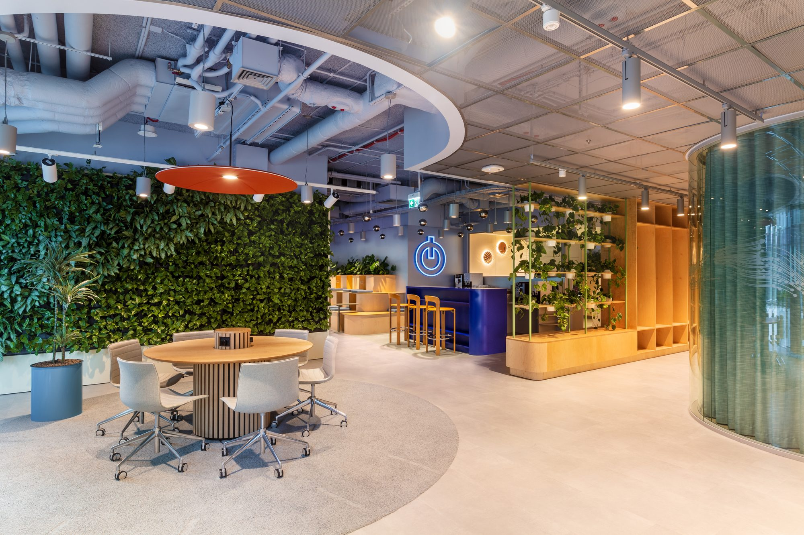
Orsted
Biuro Ørsted w Varso II przygotowano dla 200 osób na największej kondygnacji budynku. Pracownia FOURTH zaprojektowała je zgodnie z firmowymi wytycznymi Love Your Workplace.
Nr 089 - e-commerce / petfood
PL · WAW · 2024

Nr 089 / 2024 / Warszawa
PsiBufet
Pracownia HUKK.studio / Powierzchnia 400 m²
Siedziba marki świeżej karmy dla psów. Funkcjonalne biuro z otwartą strefą społeczną dostosowaną do obecności zwierząt pracowników.
Nr 090 - building materials
PL · WAW · 2024

Nr 090 / 2024 / Warszawa
Saint-Gobain
Pracownia Trzop Architekci / Foto mat. prasowe
Grupa Saint-Gobain przeniosła swoją warszawską centralę do nowoczesnego biura w Varso Tower, tworząc przestrzeń, gdzie technologie i zrównoważony rozwój idą w parze z dbałością o wellbeing pracowników. Nowe biuro na 28. piętrze najwyższego wieżowca w UE stawia na komfort, efektywność i zdrowe środowisko pracy.
Nr 091 - healthcare
PL · WAW · 2024
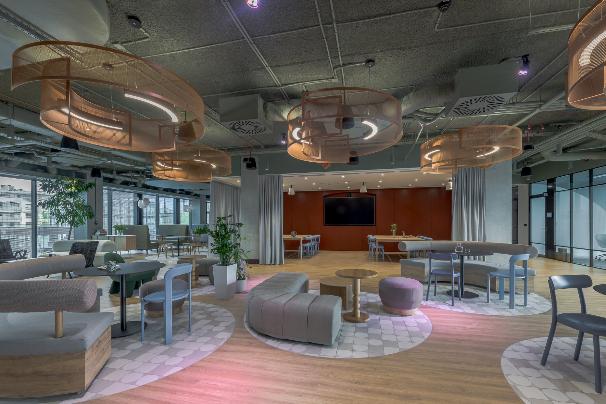
Nr 091 / 2024 / Warszawa
Sanofi
Pracownia The Design Group / Powierzchnia 3 400 m² / Budynek Lixa E
Biuro Sanofi w budynku Lixa E ma 3400 m². Recepcja przypomina bardziej hotelowe lobby niż biurową ladę, a obok jest strefa Warm Up Cool Down do wyciszenia się przed spotkaniem.
Nr 092 - doradztwo / real estate
PL · WAW · 2024

Nr 092 / 2024 / Warszawa /
Q22 ↗Savills
Nowa siedziba doradcy nieruchomości Savills w wieżowcu Q22. Projekt wnętrz biurowych z 2024 roku.
Nr 093 - venture builder / innowacje
PL · WAW · 2024

Nr 093 / 2024 / Warszawa
The Heart
Pracownia Massive Design
Redesign przestrzeni venture-buildera The Heart. Przeniesienie środka ciężkości z dużej przestrzeni eventowej w stronę pracy, spotkań i wielofunkcyjnej socjalówki z aneksem kuchennym.
Nr 094 - real estate / developer (aig, white star)
PL · WAW · 2024
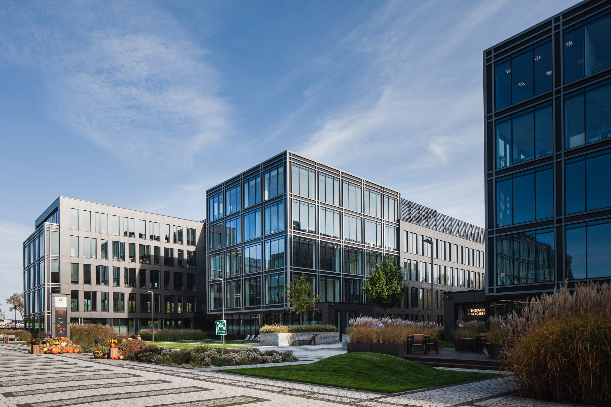
Nr 094 / 2024 / Warszawa
The Park Warsaw
Pracownia APA Wojciechowski Architekci / Powierzchnia 130 000 m² / Budynek The Park Warsaw (AIG, White Star Real Estate)
The Park Warsaw to kampus biurowy w warszawskich Włochach, niedaleko lotniska, który od lat budują White Star Real Estate i AIG. Docelowo ma tu stanąć 12 budynków i 130 000 m² biur.
Nr 095 - Coworking / Flex
PL · WAW · 2024

Nr 095 / 2024 / Warszawa / 5 lokalizacji w Warszawie
The Shire - Beyond Coworking
Powierzchnia 9 400 m² / Budynek 5 lokalizacji w Warszawie
Coworking The Shire - Beyond Coworking otworzył kolejną lokalizację w Warszawie. The Shire był najbardziej aktywnym graczem na rynku biur flex w 2024 r. - w 5 lokalizacjach udało się wynająć ponad 9400 m kw.
Nr 096 - technology
PL · WRO · 2024
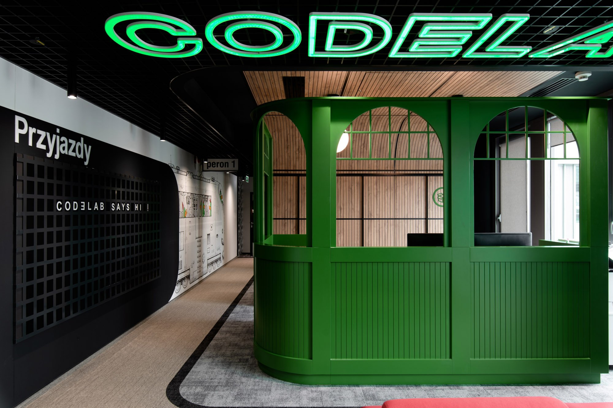
Nr 096 / 2024 / Wrocław
Codelab
Pracownia mode:lina / Powierzchnia 1 486 m² / Foto Patryk Lewiński
Biuro Codelab sąsiaduje z dworcem Wrocław Główny i to on stał się punktem wyjścia dla projektu pracowni mode:lina. Części wspólne przypominają spacer po Wrocławiu.
Nr 097 - finanse
PL · WAW · 2024
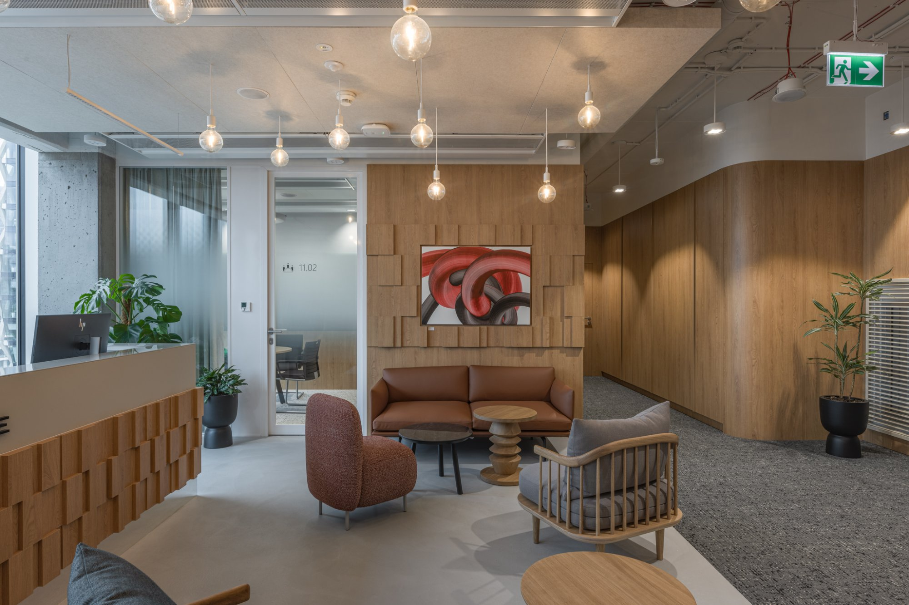
Nr 097 / 2024 / Warszawa
Europejski dostawca usług finansowych
Pracownia The Design Group / Powierzchnia 4 000 m² / Budynek Studio B
Około 4000 m² w Studio B dla jednego z dużych europejskich dostawców usług finansowych. Wcześniej firma pracowała w gabinetach, a The Design Group miała przekonać ludzi do otwartej przestrzeni i przy okazji przyciągnąć młodszych pracowników.
Nr 098 - logistyka
PL · WAW · 2024
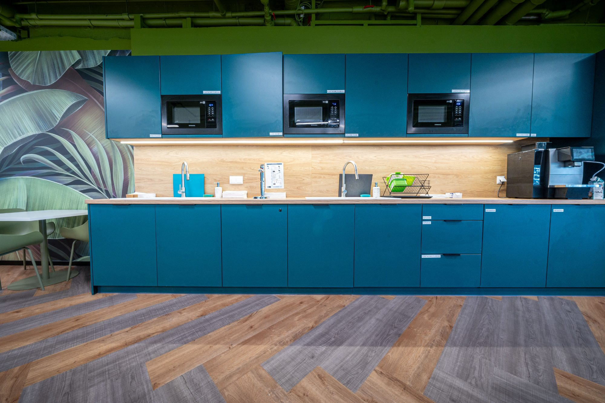
Nr 098 / 2024 / Warszawa
Abakus Logistics
Pracownia Brookfield Partners / Powierzchnia 1 700 m² / Budynek Equator II
Abakus Logistics, firma spedycyjna działająca od 2014 roku, potrzebowała więcej miejsca dla rosnącego zespołu i chciała zostać w tej samej części miasta. Przeniosła się do biurowca Equator II, na 1 700 m².
Nr 099 - fmcg / beverages
PL · WAW · 2024
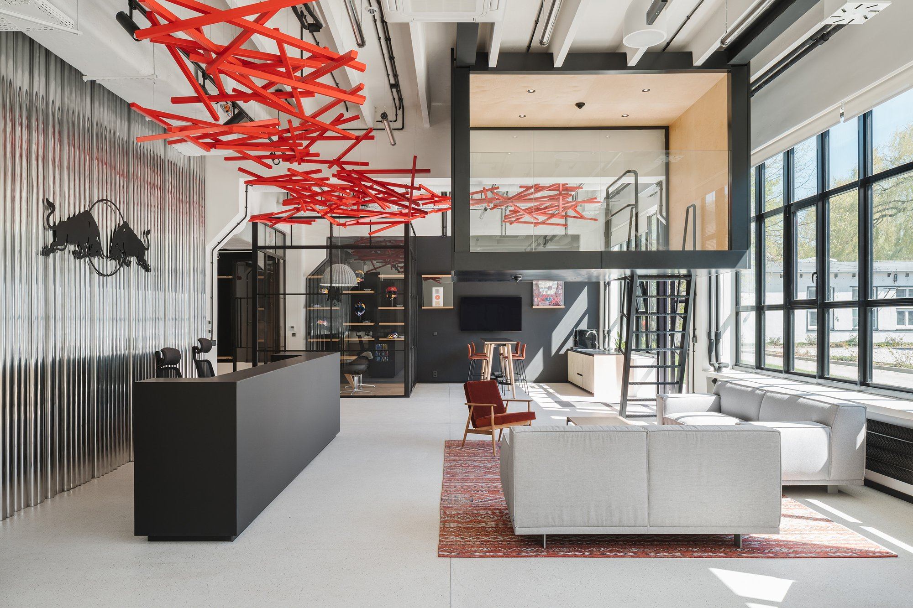
Nr 099 / 2024 / Warszawa
Red Bull
Pracownia MXCF Architekci (Marta Chrzanowska, Marcin Ferenc) / Powierzchnia 2 000 m² / Budynek Fort Mokotów
Red Bull pracuje w Warszawie w hali przemysłowej z lat 70., postawionej wewnątrz Fortu Mokotów. MXCF Architekci urządzili w niej 2 000 m² na trzech kondygnacjach. Pierwsza część biura powstała w 2021 roku, w 2024 ta sama pracownia je rozbudowała.
Nr 100 - Technology
PL · POZ · 2023
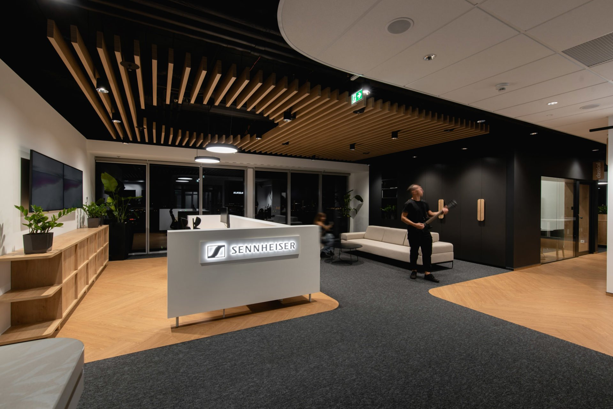
Sennheiser
Poznańskie biuro Sennheisera w Andersia Tower zaprojektowała pracownia mode:lina. Równy układ stanowisk, przeplatanych częściami wspólnymi, odpowiada pracy w metodykach zwinnych.
Nr 101 - Manufacturing / Green spaces
PL · GDN · 2023

Nr 101 / 2023 / Gdańsk
Drago (Dargo)
Pracownia BIURO KREACJA / Powierzchnia 280 m² / Foto Alka Murat
Biuro Drago w Gdańsku mieści się w wąskim i długim budynku, co wymagało starannego planowania. Biuro Kreacja prowadziło projekt od początku do końca inwestycji, stawiając na minimalizm.
Nr 102 - ubezpieczenia / IT
PL · GDN · 2023

ERGO Technology & Services
Biuro ERGO Technology & Services w budynku Format w gdańskiej Oliwie zajmuje cztery piętra. Trzop Architekci nawiązali do Bałtyku, od bursztynu w projektach Toma Dixona po motywy Stoczni Gdańskiej.
Nr 103 - Finanse
PL · GDY · 2023
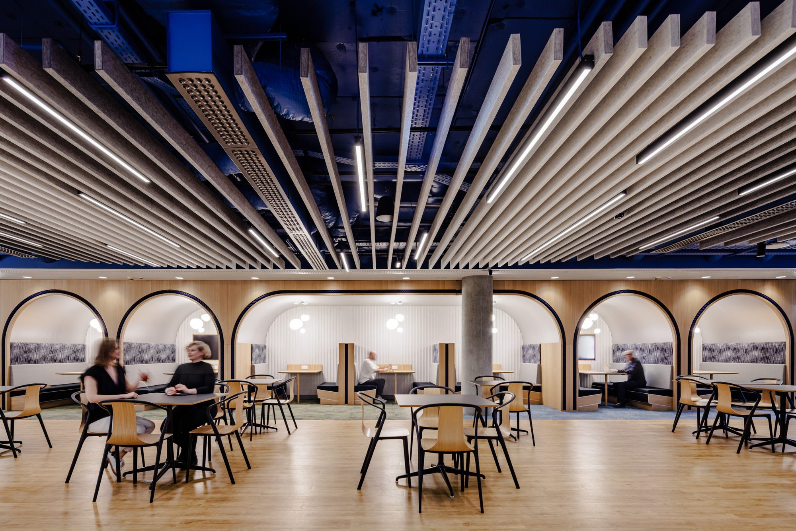
Nr 103 / 2023 / Gdynia
Private Financial Market Co.
Pracownia FOURTH / Powierzchnia 7 536 m²
Gdyńskie biuro międzynarodowej firmy z rynku finansowego pełni funkcję centrum operacyjnego, analitycznego i technologicznego. Koncepcję przygotowało Scott Brownrigg, a projekt wykonawczy FOURTH.
Nr 104 - Automotive / Manufacturing
PL · KRK · 2023

Nr 104 / 2023 / Kraków
BorgWarner
Pracownia Colliers Define / Powierzchnia 1 500 m² / Foto Adam Grzesik
Tam, gdzie technologia spotyka nature - biuro firmy specjalizujacej sie w technologiach motoryzacyjnych, laczace high-tech z biophilic designem.
Nr 105 - Konsulting
PL · KRK · 2023

Deloitte
Krakowskie biuro Deloitte w Unity Tower zaprojektowała Tetris Design + Build. Wnętrza nawiązują do architektury budynku i stylu art déco jego części wspólnych.
Nr 106 - Technology
PL · KRK · 2023

Nr 106 / 2023 / Kraków
EPAM
Pracownia Tengo Design / Powierzchnia 8 500 m² / Foto Egor Piaskovsky
Wielofunkcyjna przestrzen biurowa EPAM w Krakowie - strefy dla pracownikow, klientow, coworking i sale spotkan.
Nr 107 - Food / Beverage
PL · KRK · 2023

Nr 107 / 2023 / Kraków
PepsiCo
Pracownia Colliers Define
Brandowe biuro PepsiCo w Krakowie inspirowane wartosciami zrownowazonego rozwoju, DEI i well-beingu pracownikow.
Nr 108
PL · KRK · 2023

Nr 108 / 2023 / Kraków
Qualtrics
Pracownia Colliers Define / Powierzchnia 5 500 m²
Krakowskie biuro Qualtrics na trzech piętrach zaprojektowało Colliers Define. Swobodny charakter firmy widać już przy wejściu, gdzie zamiast recepcji urządzono m.in. ogród botaniczny.
Nr 109
PL · POZ · 2023

Nr 109 / 2023 / Poznań
eNStudios
Pracownia BIDERMANN+WIDE
Firm- Workplace - Client Enstudios, - Year 2023 - Location Poznan, Poland,
Nr 110 - bpo / ssc
PL · WAW · 2023

Nr 110 / 2023 / Warszawa
3M GSC (Global Service Center)
Pracownia Massive Design / Foto Szymon Polański
Ponowna współpraca z 3M dla globalnego centrum usług wspólnych.
Nr 111 - Engineering / Architecture
PL · WAW · 2023
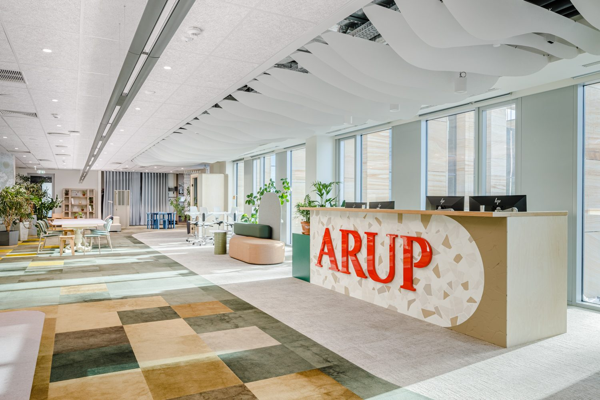
Nr 111 / 2023 / Warszawa
Arup
Pracownia FOURTH / Foto Adam Grzesik
Warszawskie biuro firmy inżynieryjnej Arup powstało w pracowni FOURTH przy udziale neuronaukowców i specjalistów od roślin.
Nr 112 - Law / Legal Services
PL · WAW · 2023
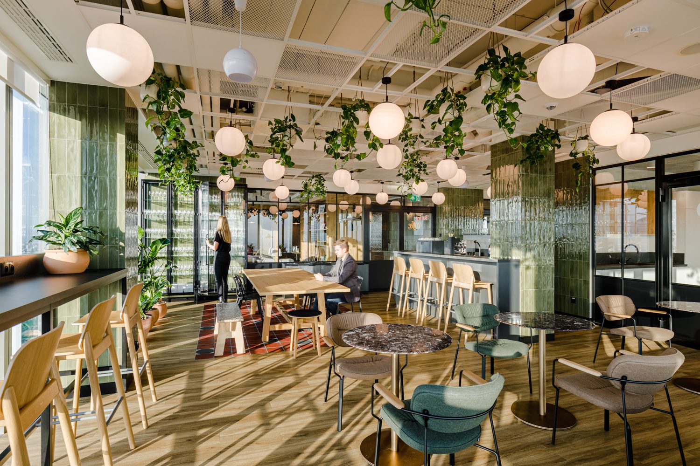
Bird & Bird
Kancelaria Bird & Bird zajmuje trzy piętra w warszawskim Central Point. FOURTH zestawił biurowy minimalizm z mocnymi kolorami, granatem i winną czerwienią.
Nr 113 - uslugi finansowe / HR
PL · WAW · 2023

E-WORK
E-WORK to organizacja stawiająca na transformację ekologiczną, przyspieszająca cyfryzację i zwiększająca konkurencyjność. Wymaganie inwestora dotyczące wnętrza: styl skandynawski, lekkość, przewiewność, użycie ciepłych materiałów...
Nr 114 - Fashion / Footwear
PL · WAW · 2023

Nr 114 / 2023 / Warszawa
ECCO
Pracownia Colliers Define / Powierzchnia 800 m²
Warszawskie biuro ECCO nawiązuje do skandynawskiego minimalizmu, bliskiego charakterowi butów marki. Otwarta przestrzeń ze wspólnymi biurkami ułatwia współpracę.
Nr 115 - usługi finansowe / windykacja
PL · WAW · 2023

EOS Poland
Biuro EOS Poland w kompleksie Wola Retro (zabytkowy budynek z lat 30. plus nowy). Czarne kubiki, akcenty czerwieni/błękitu/mięty, 'portal' łączący część historyczną z nową, akustyczne lampy oversize.
Nr 116
PL · WAW · 2023

Hines
Biuro Hines w Wola Center zaprojektowało Colliers Define, które wcześniej pracowało z tym inwestorem przy innych obiektach. Wnętrze ma klasyczny charakter, ze stonowanymi barwami i akcentami zieleni oraz żółci.
Nr 117 - FMCG / tobacco
PL · WAW · 2023

JTI (Japan Tobacco International)
Biuro JTI w Fabryce Norblina - akustyka i koordynacja wielobranżowa jako kluczowe wyzwanie, w ścisłej współpracy z istniejącymi elementami zabudowy.
Nr 118 - moda
PL · WAW · 2023

La Mania
Przeprowadzka LA MANIA z niewielkiej willi na Mokotowie do nowoczesnego biurowca X20 przy Czerniakowskiej dała architektom okazję do stworzenia unikalnej, prostej, lecz awangardowej przestrzeni, służącej za wyjątkową witrynę dla...
Nr 119 - Mixed-use office
PL · WAW · 2023

Lakeside (Cavatina Holding tenant complex)
Biurowiec dialogujący z naturą Mokotowa - geometryczne tafle elewacji odbijają zieleń Strumienia Służewieckiego.
Nr 120
PL · WAW · 2023

Nr 120 / 2023 / Warszawa
Leroy Merlin
Pracownia FOURTH
Warszawskie biuro Leroy Merlin zaprojektowała pracownia FOURTH. Realizację ukończono w 2023 roku.
Nr 121 - Tech / Data
PL · WAW · 2023

Nr 121 / 2023 / Warszawa
Lingaro Group
Pracownia BIT Creative / Powierzchnia 3 000 m² / Foto Fotomohito
Warszawska siedziba Lingaro zajmuje dwa piętra. BIT Creative zaprojektowało ją jako przyjazne biuro o domowym charakterze, z wykorzystaniem istniejącego wyposażenia firmy.
Nr 122 - Transportation / Logistics
PL · WAW · 2023

Logicor
Biuro Logicor zajmuje ostatnie piętro budynku w Elektrowni Powiśle, z tarasami wzdłuż okien. STOPROCENT architekci zrezygnowali z recepcji i zamkniętych gabinetów zarządu.
Nr 123 - Pharmaceutical
PL · WAW · 2023

Nr 123 / 2023 / Warszawa
Moderna
Pracownia Massive Design
Biuro Moderna z jasnym naturalnym swiatlem i dynamicznymi elementami architektonicznymi - projekt Massive Design.
Nr 124 - moda / sport
PL · WAW · 2023

Nr 124 / 2023 / Warszawa
OTC/4F
Pracownia Trzop Architekci
Biuro polskiej marki sportowej 4F (OTC).
Nr 125
PL · WAW · 2023

Nr 125 / 2023 / Warszawa
Orange Poland
Pracownia Jander Kabza
Projekt pracowni Jander Kabza dla Orange Poland, oddana w 2023 roku.
Nr 126 - HR / rekrutacja
PL · WAW · 2023

Page Group
Nowe biuro Page Group w najwyzszym wiezowcu UE - Varso Tower.
Nr 127 - consulting / audyt
PL · WAW · 2023

PwC Polska
Projekt biura PwC Warszawa został opracowany w 2013 roku jako pierwsze tak duże wnętrze biurowe wykorzystujące koncepcję hot desku, stołów społecznościowych oraz wspierających je mobilnych phone booths i meeting podów. Biuro...
Nr 128 - IT / cloud / data
PL · WAW · 2023

Nr 128 / 2023 / Warszawa
Snowflake
Pracownia Massive Design / Foto Szymon Polański
Pierwsze biuro Snowflake w Europie Środkowo-Wschodniej. Stylistyka coworkingu i kampusu uniwersyteckiego z odniesieniami do sportów zimowych - projekt hybrydowy dla najmłodszych pokoleń pracowników.
Nr 129 - Education / Language
PL · WAW · 2023

Nr 129 / 2023 / Warszawa / Old tenement, Warsaw centre
Tutlo
Pracownia pikstudio / Powierzchnia 1 000 m² / Budynek Old tenement, Warsaw centre / Foto Wiojnar
Szkoła językowa Tutlo zajmuje ostatnie piętro odnowionej kamienicy w centrum Warszawy. Projekt pikstudio opiera się na firmowej żółci i czerni oraz dużej ilości zieleni.
Nr 130 - instytucja publiczna / UE
PL · WAW · 2023

Nr 130 / 2023 / Warszawa
UE Agency (2023)
Pracownia Massive Design / Foto Kinga Skalik
Piąty etap współpracy z Agencją UE w Warszawie. Komfortowe i zachęcające wnętrza spełniające standardy ergonomii dla przedstawicieli z różnych krajów Unii.
Nr 131 - Co-working
PL · WRO · 2023
Nr 131 / 2023 / Wrocław / Dawny Wydział Farmacji Uniwersytetu Medycznego
L'UNI (LABO co-working)
Pracownia CUDO: / Powierzchnia 179 m² / Budynek Dawny Wydział Farmacji Uniwersytetu Medycznego / Foto Migdał Studio
Pierwsze premium co-working we Wrocławiu - falowane formy i farmaceutyczne szkło nawiązujące do historii dawnej Farmacji UMed.
Nr 132 - Consulting / Business Services / Law
PL · WRO · 2023

Olesinski i Wspolnicy
Renowacja zabytkowego budynku Renoma - zrownowazone biuro z elementami Art Deco dla kancelarii Olesinski i Wspolnicy.
Nr 133 - Manufacturing / Energy
PL · WRO · 2023
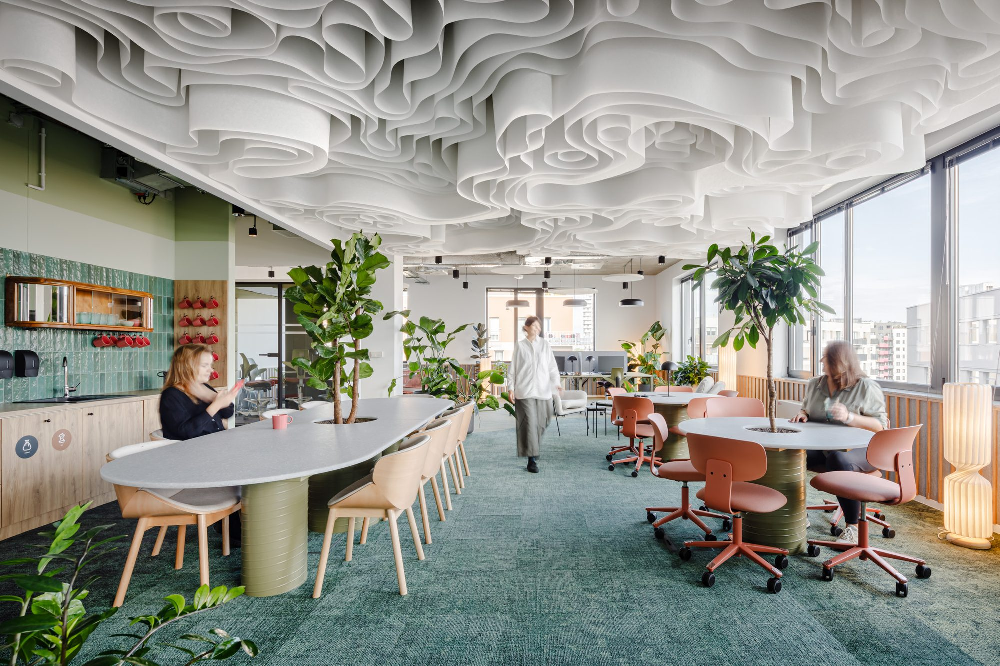
Nr 133 / 2023 / Wrocław
Private Energy Company
Pracownia FOURTH / Powierzchnia 1 800 m² / Foto Adam Grzesik
Wrocławskie biuro Fortum, firmy z branży czystej energii, FOURTH przeprojektował z myślą o osobach przychodzących codziennie i tych, które bywają w nim rzadziej. Dawna strefa zarządu stała się wspólnym miejscem spotkań, sercem biura.
Nr 134 - nieruchomości / biurowiec
PL · WRO · 2023

Nr 134 / 2023 / Wrocław / West Forum
West Forum (lobby biurowca)
Pracownia Pik Studio / Budynek West Forum
Modernizacja przestrzeni wspólnych biurowca West Forum we Wrocławiu. Ściana wejściowa z chrobotka z panelami dębowymi i logo, antracytowa kanelowana lada recepcyjna, oświetlenie LED w okrągłych otworach sufitu.
Nr 135 - fmcg / retail
PL · WAW · 2023

Nr 135 / 2023 / Warszawa
JDE Peet's
Pracownia BIT Creative / Powierzchnia 900 m²
W budynku Diuna przy Taśmowej JDE Peet's urządził biuro jak kawiarnię. Paleta to brązy i ciepłe odcienie ziemi, kolory kawy i herbaty. W recepcji stoi lada z wypisanym kawowym menu, a przy wejściu świeci duży neon z pytaniem „Coffee?”.
Nr 136 - inne
PL · WAW · 2023

Nr 136 / 2023 / Warszawa
Avis
Pracownia BIT Creative / Powierzchnia 1 000 m²
Avis, sieć wypożyczalni samochodów, urządziła biuro w kompleksie Business Garden w Warszawie. Zajmuje 1000 m².
Nr 137 - przemysł
PL · WAW · 2023

Nr 137 / 2023 / Warszawa
Stadler
Pracownia BIT Creative / Powierzchnia 1 000 m²
Stadler, producent taboru kolejowego, ma warszawskie biuro w Business Garden. Powierzchnia to 1000 m².
Nr 138 - healthcare / pharma
PL · WAW · 2023

Nr 138 / 2023 / Warszawa
AstraZeneca Pharma Polska
Pracownia Massive Design / Foto Szymon Polański
AstraZeneca Pharma Polska pracuje z Massive Design od lat, więc pracownia zna globalne standardy firmy. Tym razem chodziło o nowe piętro warszawskiej siedziby, z dodatkowymi wymaganiami i naciskiem na zrównoważony rozwój.
Nr 139 - konsulting
PL · WAW · 2023

Nr 139 / 2023 / Warszawa
MDDP
Pracownia Tetris Design + Build Polska / Powierzchnia 2 000 m²
Doradcy podatkowi z MDDP pracują w Pałacu Jabłonowskich, tuż obok Opery Narodowej. Biuro zajmuje dwa piętra i 2000 metrów kwadratowych, z osobną częścią dla powiązanej kancelarii Osborne Clarke. Mieści około 141 stanowisk.
Nr 140 - healthcare / pharma
PL · WAW · 2023

Nr 140 / 2023 / Warszawa
Bayer
Pracownia Tetris Design + Build Polska / Powierzchnia 11 000 m²
Bayer zajmuje przy Alejach Jerozolimskich trzy budynki połączone atrium, razem 11 tysięcy metrów kwadratowych. Ostatni oddano w 2011 roku i od tego czasu zmieniło się prawie wszystko: sposób pracy, technologie, przepisy przeciwpożarowe. Modernizacja trwała dziewięć miesięcy.
Nr 141 - fmcg / retail
PL · LDZ · 2023

Nr 141 / 2023 / Łódź
McCormick
Pracownia Tetris Design + Build Polska / Powierzchnia 5 000 m²
McCormick zajął sześć pięter Monopolis, łódzkiego kompleksu w dawnej fabryce. Na 5000 metrach kwadratowych jest około 430 miejsc pracy, a całość powstała w cztery miesiące.
Nr 142 - energia odnawialna
PL · WRO · 2023
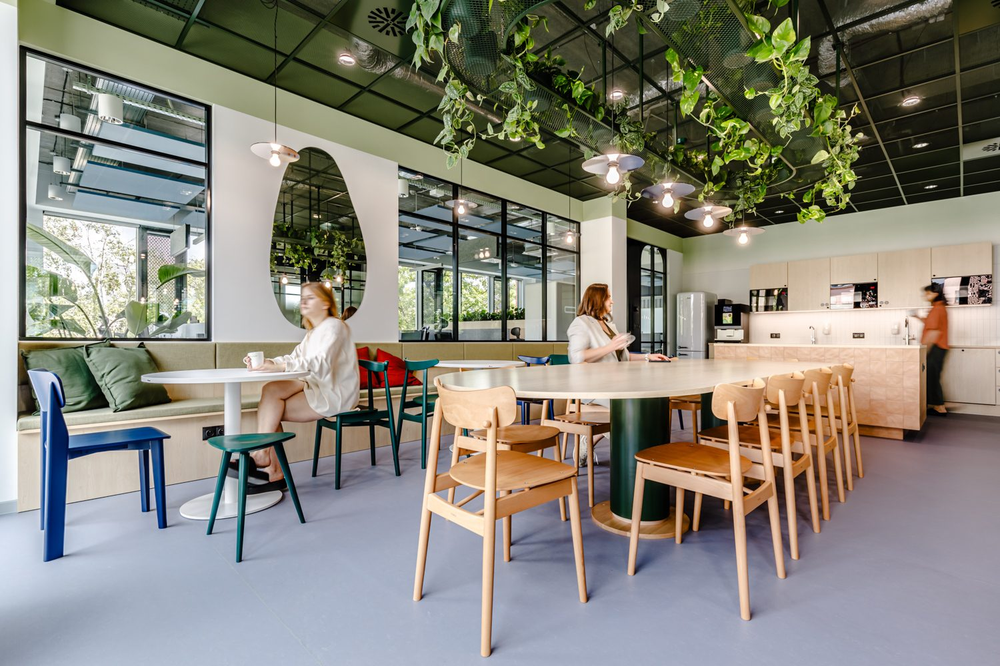
Nr 142 / 2023 / Wrocław
Fortum (centrum IT)
Pracownia FOURTH / Powierzchnia 900 m² / Foto Adam Grzesik
Drugi projekt FOURTH dla Fortum we Wrocławiu to biuro zespołów IT urządzone jak salon. Ciepły eklektyzm, ziemiste kolory, różne faktury i mnóstwo zieleni sprawiają, że wnętrze bliższe jest domowi niż open space.
Nr 143 - konsulting
PL · WRO · 2023
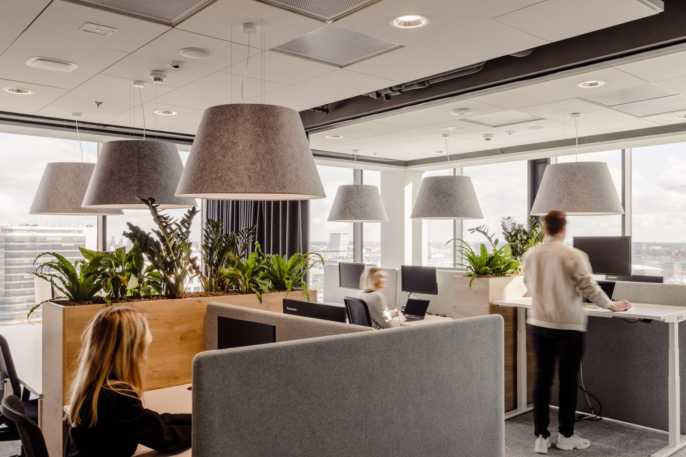
Nr 143 / 2023 / Wrocław
Międzynarodowa firma doradcza
Pracownia FOURTH / Powierzchnia 650 m² / Foto Adam Grzesik
Wrocławskie biuro globalnej firmy z branży audytu, podatków i doradztwa prawnego było pilotażem jej programu biura przyszłości. FOURTH zaprojektował 650 m² dla 60 osób, stawiając na współpracę, poczucie przynależności i możliwość ciągłych zmian.
Nr 144 - consulting / business services
PL · KAT · 2023
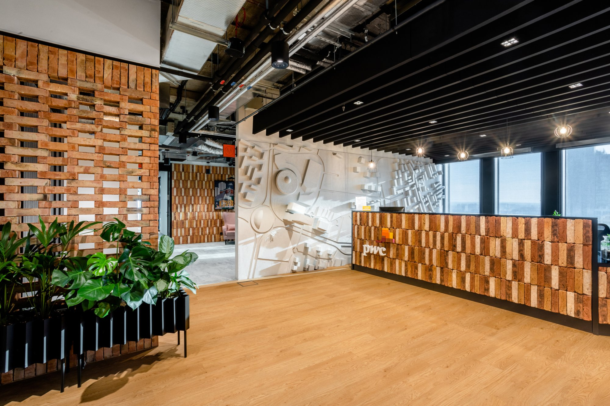
Nr 144 / 2023 / Katowice
PwC Service Delivery Center
Pracownia The Design Group / Powierzchnia 13 000 m² / Budynek .KTW II
PwC Service Delivery Center zajmuje 13 000 m² w .KTW II, w sąsiedztwie NOSPR, MCK i Spodka. Ta lokalizacja podpowiedziała temat: kultura, sztuka i śląska tradycja.
Nr 145 - technology
PL · KRK · 2023
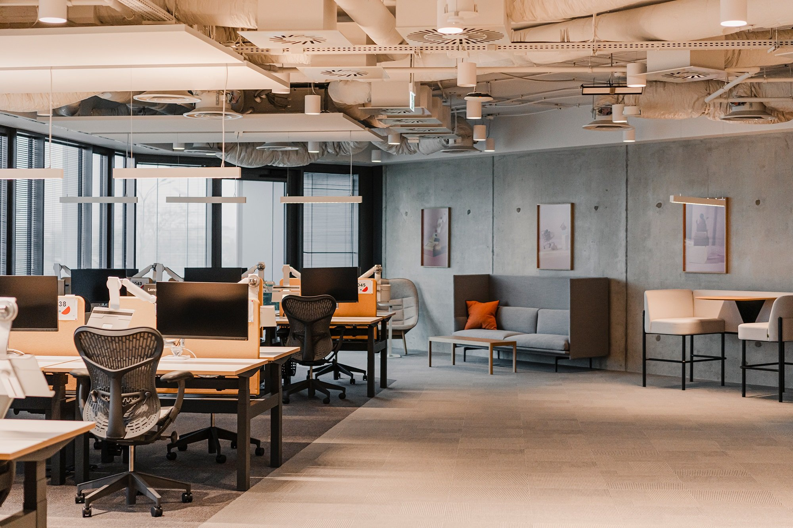
Nr 145 / 2023 / Kraków
Zendesk
Pracownia The Design Group / Powierzchnia 3 400 m² / Budynek MK29
Krakowskie biuro Zendeska w MK29 ma 3400 m² i nie przypomina korporacji. Nawet światło ma ciepłą barwę 2700 kelwinów, rzadką w biurach.
Nr 146 - technology
PL · KRK · 2023
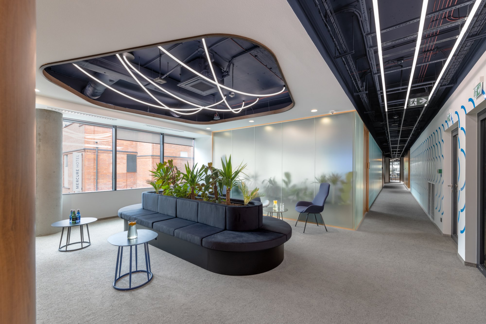
Nr 146 / 2023 / Kraków
project44
Pracownia The Design Group / Powierzchnia 2 800 m² / Budynek Fabryczna Office Park B4
Krakowskie biuro project44 zajmuje 2800 m² w budynku B4 Fabryczna Office Park przy Alei Pokoju. Wnętrze jest minimalistyczne, z czystymi liniami i prostymi formami.
Nr 147 - konsulting
PL · LDZ · 2023
Nr 147 / 2023 / Łódź
Alorica
Pracownia Brookfield Partners / Powierzchnia 4 950 m² / Budynek React
Alorica, amerykańska firma obsługi klienta zatrudniająca 100 000 osób w 15 krajach, wybrała Łódź na swoje pierwsze biuro w Polsce. Zajęła dwa piętra, 4 950 m², w budynku React przy Piłsudskiego 24.
Nr 148 - finanse
PL · WAW · 2023
Nr 148 / 2023 / Warszawa
BLIK
Pracownia Brookfield Partners / Powierzchnia 1 450 m² / Budynek X20
BLIK, czyli Polski Standard Płatności, szukał kameralnego budynku z miejscem na dalszy rozwój. Wybrał warszawski X20, gdzie zajmuje 1 450 m².
Nr 149 - energia odnawialna
PL · WAW · 2023
Nr 149 / 2023 / Warszawa
Energix Polska
Pracownia Brookfield Partners / Powierzchnia 478 m² / Budynek Elektrownia Powiśle
Energix Polska, firma budująca farmy wiatrowe i fotowoltaiczne, chciała biura, które będzie przypominać siedzibę grupy w Izraelu. Znalazła je w Elektrowni Powiśle, w ceglanych murach dawnej elektrowni miejskiej, na 478 m².
Nr 150 - gaming / tech
PL · KRK · 2023
Nr 150 / 2023 / Kraków
Four Suits Technology
Pracownia Brookfield Partners / Powierzchnia 922 m² / Budynek Brain Park
Four Suits Technology, krakowski zespół Caesars Entertainment pracujący nad zakładami sportowymi i grami online, planował potroić liczbę pracowników w kilka miesięcy. Wybrał piąte piętro Brain Parku, 922 m².
Nr 151 - tech / it
PL · KRK · 2023
Nr 151 / 2023 / Kraków
Grand Parade
Pracownia Brookfield Partners / Powierzchnia 4 824 m²
Grand Parade, krakowski hub technologiczny William Hill, przez kilka miesięcy oglądał inne biurowce, a ostatecznie został przy Kotlarskiej 11. Zamiast zmiany adresu przebudowano 4 824 m² pod pracę hybrydową. Układ powstał po warsztatach z kierownikami zespołów, którzy opowiedzieli, jak pracują ich ludzie.
Nr 152 - tech / it
PL · WAW · 2023
Nr 152 / 2023 / Warszawa
SNI
Pracownia Brookfield Partners / Powierzchnia 720 m² / Budynek Gdański Business Center
SNI, dostawca outsourcingu IT, przeniósł się do Gdańskiego Business Center, bo budynek miał najwięcej udogodnień i najlepszy dojazd. Biuro ma 720 m², sale konferencyjne i pokoje do pracy w skupieniu, a jego układ klient rysował razem z architektami.
Nr 153 - e-commerce / technology
PL · WAW · 2023
Nr 153 / 2023 / Warszawa
Travelist
Pracownia Brookfield Partners / Powierzchnia 838 m² / Budynek Focus
Travelist, część grupy Secret Escapes, zmienił sposób pracy i chciał mniej płacić za biuro. Zespół zszedł z około 1 000 m² do jednego modułu w budynku Focus przy Alei Armii Ludowej 26, a gdy firma znów urosła, dobrał kolejne powierzchnie na tym samym piętrze i wyżej.
Nr 154 - Real estate / developer (TDJ Estate)
PL · KAT · 2022

.KTW I & II
.KTW I (66 m, 2018) i .KTW II (133 m, 2022) - najwyższy biurowiec na Górnym Śląsku. Nagroda Roku SARP 2022. Łącznie 58 000 m² biur klasy A.
Nr 155 - packaging
PL · KRK · 2022

Nr 155 / 2022 / Kraków
CANPACK
Pracownia Trzop Architekci / Foto fotomohito
Nowoczesna, proekologiczna, dostosowana do pracy o różnym charakterze, silnie podkreślająca tożsamość firmy i z malowniczym widokiem na starówkę - taka jest nowa siedziba firmy Canpack w Krakowie.
Nr 156 - inne
PL · KRK · 2022
Nr 156 / 2022 / Kraków
Ringier Axel Springer Polska
Pracownia FOURTH / Powierzchnia 4 330 m² / Foto Adam Grzesik
Krakowskie biuro Ringier Axel Springer Polska w budynku V.Offices powstało z myślą o pracy hybrydowej. Zespół przeniósł się z rozproszonego, sześciopiętrowego biura na jedno piętro o powierzchni 4330 m², przygotowane dla 500 osób.
Nr 157 - e-commerce / technology
PL · POZ · 2022
Nr 157 / 2022 / Poznań
Allegro (Nowy Rynek)
Pracownia The Design Group / Powierzchnia 24 700 m² / Budynek Nowy Rynek
Główna siedziba Allegro zajmuje dziesięć pięter budynku D kompleksu Nowy Rynek w Poznaniu, 24 700 m². Oprócz biura jest tu centrum konferencyjne, mailroom, przedszkole i call center na prawie całym piętrze.
Nr 158 - Digital Agencies / Software
PL · POZ · 2022
Nr 158 / 2022 / Poznań / Przedwojenna willa w centrum Poznania
Crafton
Pracownia mode:lina / Powierzchnia 400 m² / Budynek Przedwojenna willa w centrum Poznania / Foto Patryk Lewiński
Firma programistyczna Crafton przeniosła się do przedwojennej willi w centrum Poznania. Pracownia mode:lina zachowała oryginalną stolarkę, sztukaterie i drewniane podłogi, zestawiając je z mocnymi kolorami.
Nr 159 - Advertising / Marketing
PL · POZ · 2022

Nr 159 / 2022 / Poznań
GPD Agency
Pracownia BIDERMANN+WIDE
Smiale kolory i wyrazne strefy dla dynamicznego srodowiska pracy agencji GPD - projekt BIDERMANN+WIDE.
Nr 160 - retail / convenience
PL · POZ · 2022

Nr 160 / 2022 / Poznań
Żabka Polska
Pracownia Trzop Architekci
Poznańskie biuro Żabki Polska to realizacja pracowni Trzop Architekci, ukończona w 2022 roku.
Nr 161 - edukacja / IT
PL · WAW · 2022
Nr 161 / 2022 / Warszawa
42 Warsaw
Pracownia FOURTH / Powierzchnia 1 600 m²
Szkoła programowania 42 Warsaw powstała w dawnej przestrzeni biurowej, przebudowanej według projektu pracowni FOURTH.
Nr 162 - doradztwo podatkowe
PL · WAW · 2022

Nr 162 / 2022 / Warszawa / Gdański Business Center
ALTO Tax
Pracownia Forbis Group / Powierzchnia 1 093 m² / Budynek Gdański Business Center
Biuro firmy doradztwa podatkowego ALTO Tax - adaptacja istniejących elementów i nadanie im nowego kontekstu.
Nr 163 - insurance
PL · WAW · 2022
Nr 163 / 2022 / Warszawa
Generali
Pracownia FOURTH / Powierzchnia 13 500 m² / Foto Adam Grzesik
Ogromna centrala Generali Polska w Warszawie - 13 500 m2 designu autorstwa pracowni FOURTH.
Nr 164 - inwestycje
PL · WAW · 2022

Nr 164 / 2022 / Warszawa / Diuna (Tasmowa)
MS Galleon Group
Pracownia Trzop Architekci / Budynek Diuna (Tasmowa) / Foto Michał Jaroń
Projekt warszawskiego biura spółek tworzących Grupę MS GALLEON był jednym z najbardziej wyjątkowych wyzwań projektowych, jakie miało okazję realizować studio. W skład Grupy wchodzą m.in.: Ekovoltis, Barlinek S.A., Columbus Pro,...
Nr 165 - advertising / marketing
PL · WAW · 2022
Nr 165 / 2022 / Warszawa
Mediabrands
Pracownia FOURTH / Powierzchnia 2 600 m² / Foto Adam Grzesik
Jasna i funkcjonalna przestrzen dla agencji Mediabrands - przeprowadzka wiosna 2022, projekt FOURTH.
Nr 166 - Food / Beverage
PL · WAW · 2022

Nr 166 / 2022 / Warszawa
PepsiCo Poland
Pracownia MIXD
Zabawowa, wibrujaca przestrzen dla biura PepsiCo Poland w Warszawie od pracowni MIXD.
Nr 167
PL · WAW · 2022

Nr 167 / 2022 / Warszawa
Solenis
Pracownia Massive Design
Projekt pracowni Massive Design dla Solenis, oddana w 2022 roku.
Nr 168 - marketing / komunikacja
PL · WAW · 2022

WPP
Kampus WPP w Centrum Praskim Koneser zaprojektowali Trzop Architekci. Wnętrze oparto na motywie kiełkowania, wzrostu i butelkowania, a w kampusie działa stołówka 3 Cups.
Nr 169 - tech
PL · WRO · 2022

Nr 169 / 2022 / Wrocław / Bema Plaza
Google Polska
Pracownia Trzop Architekci / Budynek Bema Plaza
Wrocławskie biuro Google w Bema Plaza zaprojektowali Trzop Architekci. W projekcie pojawiają się bruk, czerwona cegła, motywy mariny i Pergoli oraz dużo roślin.
Nr 170 - manufacturing
PL · WRO · 2022

Nr 170 / 2022 / Wrocław
Vorwerk
Pracownia Massive Design / Powierzchnia 1 860 m² / Foto courtesy of Vorwerk Polska
Brandowy projekt z intensywna zielenia Vorwerk (Thermomix, Kobold) - centralny punkt The Market integrujacy recepcje i kawiarnie.
Nr 171 - Manufacturing
PL · LDZ · 2022

Nr 171 / 2022 / Łódź / HiPiotrkowska
Avient
Pracownia MDD / Powierzchnia 567 m² / Budynek HiPiotrkowska
Biuro producenta materiałów polimerowych Avient mieści się w łódzkim budynku HiPiotrkowska. Projekt przygotowała pracownia MDD.
Nr 172 - Manufacturing / Food
PL · LDZ · 2022

Nr 172 / 2022 / Łódź
Barry Callebaut
Pracownia Jander Kabza Architekci / Powierzchnia 1 812 m²
Łódzkie biuro producenta czekolady Barry Callebaut, zaprojektowane przez Jander Kabza Architekci, utrzymano w stylu loftowym z motywami kakao.
Nr 173 - logistyka
PL · WAW · 2022

Nr 173 / 2022 / Warszawa
DPD
Pracownia BIT Creative / Powierzchnia 8 000 m²
DPD, firma kurierska, ma warszawskie biuro przy ulicy Mineralnej 7. Zajmuje 8000 m².
Nr 174 - tech / it
PL · KRK · 2022

Nr 174 / 2022 / Kraków
Oracle
Pracownia Massive Design / Foto Szymon Polański
Krakowskie biuro Oracle wyrosło z projektu, który Massive Design przygotowało wcześniej dla firmy w Warszawie. Nie ma tu recepcji. Jej miejsce zajmuje otwarta, wielofunkcyjna przestrzeń do pracy zespołowej.
Nr 175 - fmcg / retail
PL · WAW · 2022

Nr 175 / 2022 / Warszawa
Unilever
Pracownia Massive Design / Foto Szymon Polański
Unilever zajmuje biuro w warszawskim Eurocentrum od 2014 roku. Po pandemii firma uznała, że samo odświeżenie kuchni i stref socjalnych nie wystarczy, i zmieniła układ, funkcje oraz wystrój całego biura.
Nr 176 - fmcg / retail
PL · WAW · 2022

Nr 176 / 2022 / Warszawa
Cargill
Pracownia Massive Design / Foto Szymon Polański
Massive Design zaprojektowało warszawskie biuro Cargill w 2010 roku. Gdy firma przedłużyła najem, wróciła do tej samej pracowni, by odświeżyć niemal całe wnętrze dla 150-osobowego zespołu.
Nr 177 - architektura / design
PL · POZ · 2022
Nr 177 / 2022 / Poznań
Demiurg (budynek G2)
Pracownia mode:lina / Foto Patryk Lewiński
Na poznańskim Górczynie, tuż obok biura z przedwojennym bunkrem, Demiurg postawił drugi budynek: prostą bryłę z drewnianą elewacją i dużymi przeszkleniami. Wnętrza znów zaprojektowała mode:lina, a deski z elewacji weszły do środka jako listwy na ścianach, które poprawiają akustykę.
Nr 178 - coworking
PL · WAW · 2022
Nr 178 / 2022 / Warszawa
Brain Embassy Czackiego
Pracownia mode:lina / Foto Patryk Lewiński
Socrealistyczny biurowiec przy Czackiego w centrum Warszawy przez lata gościł także Teatr Kwadrat. Po modernizacji Adgar Poland otworzył w nim coworking Brain Embassy, a wnętrza zaprojektowała mode:lina, która wcześniej pracowała dla tej marki przy Amfiteatrze Brain Embassy.
Nr 179 - healthcare / pharma
PL · KRK · 2022

Nr 179 / 2022 / Kraków
Lundbeck
Pracownia Tetris Design + Build Polska / Powierzchnia 2 370 m²
Krakowski Lundbeck przebudował trzy piętra, razem 2370 metrów kwadratowych, nie zamykając biura. Prace rozłożono na etapy i trwały dwanaście miesięcy, a przy wymianie wykładziny meble wędrowały z miejsca na miejsce.
Nr 180 - fmcg / retail
PL · LDZ · 2022

Nr 180 / 2022 / Łódź
Wella Company
Pracownia Tetris Design + Build Polska / Powierzchnia 1 500 m²
Wella Company, producent kosmetyków do włosów, otworzyła drugą polską siedzibę w łódzkiej Bramie Miasta. Biuro ma prawie 1500 metrów kwadratowych i powstało w dziewięć tygodni. Koncepcję przygotowano w dziesięć dni, a projekt wykonawczy i budowa szły równolegle.
Nr 181 - prawo
PL · WAW · 2022

Nr 181 / 2022 / Warszawa
CMS
Pracownia Trzop Architekci
Recepcja kancelarii CMS jest na 42. piętrze Varso Tower i patrzy prosto na zegar Pałacu Kultury, dokładnie na wysokości oczu wchodzącego. Ściany wyłożono dębem wybarwionym na czarno, posadzkę białymi spiekami w dużym formacie, a w blaszanym suficie wycięto raster w kształcie chmur, podświetlony ledami w barwie dziennego światła. Obok recepcji przeszklona klatka schodowa łączy pięć kondygnacji, od 39. do 43. piętra. Na jednej jej ścianie rośnie pionowy ogród o powierzchni 55 m², na drugiej biegnie 21-metrowy mural z modernistycznymi budynkami Warszawy.
Nr 182 - finanse
PL · WAW · 2022
Nr 182 / 2022 / Warszawa
Nordea Baltic Sea Office
Pracownia FOURTH / Powierzchnia 4 300 m² / Foto Adam Grzesik
W kompleksie Libra przy Alejach Jerozolimskich Nordea zajmuje kilka kondygnacji. Najwyższe piętra mieszczą centrum IT Nordea Horizon, a niżej pracują międzynarodowe zespoły w Baltic Sea Office o powierzchni 4300 m². Projekt ukończono tuż przed pandemią, w 2020 roku, ale ludzie wrócili do biura dopiero dwa lata później.
Nr 183 - e-commerce / marketplace
PL · POZ · 2022
Nr 183 / 2022 / Poznań
OLX
Pracownia The Design Group / Powierzchnia 4 500 m² / Budynek Maraton
Przebudowa biura OLX w poznańskim Maratonie, 4500 m², ruszyła w połowie 2021 roku, zaraz po pandemii. Biuro miało dać ludziom to, do czego przywykli w domu: ergonomię i poczucie bezpieczeństwa.
Nr 184 - e-commerce / technology
PL · WAW · 2022
Nr 184 / 2022 / Warszawa
Allegro (Fabryka Norblina)
Pracownia The Design Group / Powierzchnia 24 000 m² / Budynek Fabryka Norblina
Warszawskie biuro Allegro zajmuje siedem pięter w budynkach Plater i Galwan na terenie Fabryki Norblina, prawie 24 000 m². The Design Group wyszła od miejsca: szkło, cegła i konstrukcja dawnej fabryki wyznaczyły nastrój wnętrz, a industrialny charakter złagodziły ciepłe wykończenia, jasne kolory i drewno.
Nr 185 - food / beverage
PL · WAW · 2022
Nr 185 / 2022 / Warszawa
Bacardi-Martini
Pracownia The Design Group / Powierzchnia 1 000 m² / Budynek Mokotów Nova
Metamorfoza biura Bacardi-Martini w Mokotów Nova. Nowe wnętrze miało działać w modelu elastycznym, a jednocześnie zostać przy rodzinnych wartościach firmy i przy grafice jej znanych marek.
Nr 186 - finanse
PL · WAW · 2022
Nr 186 / 2022 / Warszawa
Provident Polska
Pracownia The Design Group / Powierzchnia 3 500 m² / Budynek Gdański Business Center / Foto Fotomohito
Provident Polska zajmuje dziewiąte i dziesiąte piętro Gdańskiego Business Center, około 3500 m². Przebudowa miała zachęcać do pracy zespołowej, warsztatów i spotkań z partnerami, w zgodzie z pracą hybrydową i zasadą zero waste.
Nr 187 - real estate / developer (white star)
PL · KRK · 2022
Nr 187 / 2022 / Kraków
The Park Kraków
Pracownia APA Wojciechowski Architekci / Budynek The Park Kraków
The Park Kraków powstaje w Podgórzu, przy ulicach Kuklińskiego i Saskiej, obok stacji Kraków Płaszów i zalewu Bagry. Na pięciu hektarach White Star Real Estate i Cain International planują osiem biurowców, a ponad trzy hektary mają zostać bez samochodów.
Nr 188 - muzyka / media
PL · WAW · 2021
Nr 188 / 2021 / Warszawa
Universal Music Polska
Pracownia The Design Group / Powierzchnia 1 500 m² / Budynek X20 / Foto Fotomohito
Biuro Universal Music Polska w budynku X20 ma około 1500 m². Surowy industrialny styl spotyka się tu z nowoczesnością i domową elegancją.
Nr 189 - Coworking
PL · WAW · 2021
Nr 189 / 2021 / Warszawa
Venture Cafe Warsaw (District Hall / TrendHouse)
Pracownia mode:lina / Powierzchnia 1 300 m² / Foto Patryk Lewiński
Venture Cafe Warsaw to miejsce wydarzeń i coworkingu, na które składają się otwarta District Hall oraz klub TrendHouse. Wnętrza zaprojektowała pracownia mode:lina.
Nr 190 - inne
PL · KAT · 2021

Nr 190 / 2021 / Katowice
Honeywell
Pracownia Trzop Architekci
Katowickie biuro Honeywell zaprojektowali Trzop Architekci, nawiązując do historycznego i architektonicznego kontekstu miejsca.
Nr 191 - energetyka / offshore
PL · KRK · 2021
Nr 191 / 2021 / Kraków
TechnipFMC
Pracownia The Design Group / Powierzchnia 6 120 m² / Budynek Podium Park / Foto Fotomohito
Krakowskie biuro TechnipFMC w Podium Park ma 6120 m² i jest techniczne i surowe, tak jak chcieli pracujący tu inżynierowie. Są przemysłowe lampy, kratownice, kontenery, żółte barierki i drzwi kontenerowe z odzysku.
Nr 192 - Industrial / Steel manufacturing
PL · ORZ · 2021
Nr 192 / 2021 / Orzesze / Dawny kompleks ciężkiego przemysłu z 1951 - adaptacja portierni i biurowca
NT Industry
Pracownia GIGAARCHITEKCI / Artur Garbula / Powierzchnia 1 500 m² / Budynek Dawny kompleks ciężkiego przemysłu z 1951 - adaptacja portierni i biurowca / Foto Tomasz Zakrzewski
Polska centrala duńskiego producenta stali - rewitalizacja dawnej portierni i biurowca w pierwotnym, surowym duchu hut z lat 50.
Nr 193 - Real estate / Architecture
PL · SOP · 2021

Nr 193 / 2021 / Sopot / 696 Office, Aleja Niepodległości 696
proconcept (developer + studio)
Pracownia proconcept (Marcin Kaniewski) / Powierzchnia 2 500 m² / Budynek 696 Office, Aleja Niepodległości 696 / Foto ONI Studio
Drewniany rytm fasady i surowy beton - sopocka siedziba pracowni proconcept przy głównej arterii miasta.
Nr 194 - innowacje / ekosystem startupowy
PL · WAW · 2021
Cambridge Innovation Center (CIC) Warsaw
Multifunkcyjna platforma innowacji w najwyzszym budynku UE.
Nr 195 - real estate / developer (skanska)
PL · WAW · 2021

Nr 195 / 2021 / Warszawa
Generation Park
Pracownia JEMS Architekci / Foto Piotr Ostrowski
Zespół trzech biurowców przy rondzie Daszyńskiego z największą zieloną ścianą w Polsce, pierwszy projekt JEMS od początku realizowany w BIM.
Nr 196 - magazyny / nieruchomosci
PL · WAW · 2021

Panattoni Europe
Trzy pietra, trzy koncepty - multikulturowe HQ Panattoni w duchu Less Waste.
Nr 197 - bankowość / IT
PL · WAW · 2021

Raiffeisen Bank International (MIT Group Delivery Center)
1300 m2 dla MIT Group Delivery Center w Centrum Praskim Koneser. Strefa relaksu z piłkarzykami, autorski neon 'Nice to MIT you' wykonany przez pracownika, stoliki ze stolarskiego warsztatu zespołu.
Nr 198 - deweloper
PL · WAW · 2021
Nr 198 / 2021 / Warszawa
STRABAG Real Estate
Pracownia FOURTH / Powierzchnia 450 m²
STRABAG Real Estate (SRE) to jedna z czołowych firm w dziedzinie projektów deweloperskich w wielkich europejskich miastach. Tétris powierzono renowację polskiego biura SRE w modelu Design + Build. Pracownia FOURTH (wtedy jeszcze Workplace) odpowiadała za koncepcję, a zespół projektowy Tétris za projekty wykonawcze. Realizacja zbiegła się z trudnym początkiem pandemii, jednak dzięki zrozumieniu klienta i znakomitej organizacji pracy projekt zakończono w terminie. Przestrzeń składa się z dwóch open space’ów, gabinetu, trzech sal konferencyjnych, kuchni i recepcji. Warszawskie biuro SRE znajduje się w ich pierwszym polskim projekcie - budynku Astoria Premium Offices. Połączenie wysokiej jakości materiałów, częściowo istniejącego wyposażenia oraz dodatkowych rozwiązań ekologicznych pozwoliło stworzyć nowoczesne, zrównoważone, przyjazne środowisku miejsce pracy.
Nr 199 - real estate / developer (karimpol)
PL · WAW · 2021
Nr 199 / 2021 / Warszawa
Skyliner (Karimpol)
Pracownia APA Wojciechowski Architekci / Powierzchnia 49 000 m² / Budynek Skyliner, rondo Daszyńskiego
Skyliner przy rondzie Daszyńskiego ma 195 metrów i należy do najwyższych biurowców w Warszawie. Inwestorem jest Karimpol.
Nr 200 - Multi-tenant office
PL · WAW · 2021

The Lumen
Następca duetu Skylight & Złote Tarasy - Ryder Architecture dostawia trzeci biurowiec klasy A w sercu Warszawy.
Nr 201 - instytucje publiczne / ue
PL · WAW · 2021

Nr 201 / 2021 / Warszawa
UE Agency (EU Agency) - 2021
Pracownia Massive Design / Foto Szymon Polański
Biuro Agencji UE projektowane z myślą o najwyższych standardach ergonomii i uniwersalności dla pracowników z różnych krajów Unii.
Nr 202 - Media / Tech
PL · WAW · 2021

Nr 202 / 2021 / Warszawa
Wirtualna Polska
Branża Media / Tech
Wirtualna Polska otworzyła nową siedzibę w Warszawie w 2021 roku.
Nr 203 - coworking
PL · WRO · 2021
Nr 203 / 2021 / Wrocław
CoWork Aleja Bielany
Pracownia mode:lina architekci / Powierzchnia 350 m² / Foto Patryk Lewiński
Na mapie Dolnego Śląska pojawiła się nowa przestrzeń coworkingowa - CoWork Aleja Bielany - komfortowe miejsce do pracy zdalnej, spotkań biznesowych i nauki, ulokowane w centrum handlowym Bielany Wrocławskie. W odpowiedzi na pandemiczną rzeczywistość, która zmieniła tradycyjny sposób pracy w hybrydowy lub w pełni zdalny, właściciele centrum zdecydowali się rozbudować istniejącą przestrzeń coworkingową. Wybrano koncepcję 'work near home' dla ludzi mieszkających w pobliżu jako alternatywę do pracy z domu czy podróży do centrum miasta. Kompaktowe wymiary (poniżej 350 m²) i nietypowa lokalizacja w centrum handlowym były ciekawym wyzwaniem. Miejsce dla startupowców, freelancerów oraz osób szukających alternatywy dla home office. 16 indywidualnych biurek, 4 sale konferencyjne, miejsca do pracy wspólnej oraz strefa relaksu z aneksem kuchennym. Komfort akustyczny zapewnia 5 wyciszonych i klimatyzowanych budek telefonicznych. Połączenie nowoczesnego industrialnego designu z klasycznymi skandynawskimi elementami IKEA.
Nr 204 - gaming / bukmacher
PL · KAT · 2021

Nr 204 / 2021 / Katowice
STS
Pracownia Tetris Design + Build Polska / Powierzchnia 540 m²
Nowe biuro polskiego bukmachera STS w stolicy.
Nr 205 - finanse
PL · WAW · 2021

Nr 205 / 2021 / Warszawa
Mid Europa Partners
Pracownia BIT Creative / Powierzchnia 500 m²
Mid Europa Partners, fundusz private equity, ma warszawskie biuro w Warsaw Financial Center. To 500 m².
Nr 206 - ubezpieczenia
PL · WAW · 2021

Nr 206 / 2021 / Warszawa
Signal Iduna
Pracownia BIT Creative / Powierzchnia 1 500 m²
Ubezpieczyciel Signal Iduna ma warszawskie biuro w budynku Wola Retro. Zajmuje 1500 m².
Nr 207 - healthcare / pharma
PL · WAW · 2021
Nr 207 / 2021 / Warszawa
MSD Polska
Pracownia FOURTH / Powierzchnia 4 510 m² / Foto Adam Grzesik
MSD Polska zajmuje cztery piętra Warsaw Trade Tower, reprezentacyjne jest szesnaste. Koncepcja FOURTH nosi nazwę Green Industrial Pharmacy i łączy naukową precyzję z klimatem dawnej apteki.
Nr 208 - healthcare / pharma
PL · WAW · 2021
Nr 208 / 2021 / Warszawa
STADA
Pracownia The Design Group / Powierzchnia 700 m² / Budynek The Park Warsaw / Foto Fotomohito
Warszawskie biuro STADA w The Park Warsaw jest jasne i pogodne, klasyczne z domieszką industrialnego klimatu. Dużo zieleni i stonowane kolory sprawiają, że czuć się tu trochę jak w domu.
Nr 209 - finanse
PL · WAW · 2021
Nr 209 / 2021 / Warszawa
Notus Finanse
Pracownia Brookfield Partners / Powierzchnia 1 019 m² / Budynek Plac Unii
Notus Finanse, jedna z największych w Polsce firm pośrednictwa kredytowego, potraktowała biuro na Placu Unii jako wzór dla kolejnych oddziałów. Na 1 019 m² zmieściło się 15 sal spotkań i duża sala konferencyjna z kącikiem kawowym. Kiedy wyceny wykonawców przekroczyły budżet, koszt aranżacji udało się wynegocjować o 15 procent niżej.
Nr 210 - Architektura
PL · POZ · 2020
Nr 210 / 2020 / Poznań / Suterena w eleganckim budynku z lat 60.
mode:lina
Pracownia mode:lina / Budynek Suterena w eleganckim budynku z lat 60. / Foto Marcin Dondajewski
Sami architekci dla siebie. Poznański hub eksperymentów funkcjonalnych.
Nr 211 - Technology
PL · KAT · 2020

Nr 211 / 2020 / Katowice
Eurofins GSC IT
Pracownia Ofisovnia / Powierzchnia 1 112 m² / Foto Jakub Dziedzic
Lounge-office inspirowany mid-century - biuro z atmosfera hotelowego lounge'u, 70% ukladu poprzedniego najemcy zachowane jako sustainability.
Nr 212 - Real estate / developer (Echo Investment)
PL · KAT · 2020

Nr 212 / 2020 / Katowice / Face2Face (Echo Investment)
Face2Face Business Campus
Pracownia Grupa 5 Architekci / Powierzchnia 47 000 m² / Budynek Face2Face (Echo Investment)
Dwa biurowce (średniowysoki + wysoki) z zielonym patio jako odpowiedź na potrzebę cichej przestrzeni w sercu metropolii.
Nr 213 - real estate / developer
PL · KRK · 2020

Nr 213 / 2020 / Kraków / V.Offices
AFI Europe Offices
Pracownia Iliard / Budynek V.Offices
Kameralne biuro międzynarodowego dewelopera AFI Europe w krakowskim V.Offices - minimalistyczne oświetlenie, naturalne drewno i tkaniny, kolorystyka beży, bieli i szarości.
Nr 214 - inne
PL · KRK · 2020
Nr 214 / 2020 / Kraków
Autodesk
Pracownia The Design Group / Powierzchnia 1 700 m² / Budynek Unity Centre / Foto Fotomohito
Krakowskie biuro Autodesku w Unity Centre ma około 1700 m² i styl modern industrial ocieplony drewnem i kolorem.
Nr 215 - insurance / financial services
PL · KRK · 2020
Nr 215 / 2020 / Kraków
Xceedance
Pracownia The Design Group / Powierzchnia 1 600 m² / Budynek High5ive / Foto Fotomohito
Krakowskie biuro Xceedance w High5ive ma 1600 m² i łączy styl industrialny z domowym klimatem. Ma być na luzie, jak u siebie.
Nr 216 - chemia / farby
PL · WAW · 2020

Nr 216 / 2020 / Warszawa / The Park
AkzoNobel
Pracownia BIT Creative / Powierzchnia 3 500 m² / Budynek The Park
Moc koloru - biuro dla 400 osob z intensywnymi akcentami z palety AkzoNobel.
Nr 217
PL · WAW · 2020

Nr 217 / 2020 / Warszawa
Clay.Warsaw
Pracownia Mateusz Baumiller
Projekt pracowni Mateusz Baumiller dla Clay.Warsaw, oddana w 2020 roku.
Nr 218 - real estate services
PL · WAW · 2020

Nr 218 / 2020 / Warszawa
Cushman & Wakefield
Pracownia Massive Design / Powierzchnia 2 500 m² / Foto Szymon Polanski
Skonsolidowana centrala Cushman & Wakefield w The Warsaw Hub - niemal 2500 m2 na dwoch pietrach.
Nr 219 - real estate / mixed-use
PL · WAW · 2020
Nr 219 / 2020 / Warszawa
Elektrownia Powiśle
Pracownia APA Wojciechowski Architekci / Powierzchnia 100 000 m² / Budynek Elektrownia Powiśle (Tristan Capital + White Star)
Elektrownia Powiśle to dawna elektrownia miejska nad Wisłą, którą APA Wojciechowski zamieniło na kwartał biur, sklepów, restauracji i hotelu Barceló. W 2021 roku projekt dostał nagrodę MIPIM Awards w kategorii Best Mixed-Use Development.
Nr 220 - nieruchomosci
PL · WAW · 2020

JLL
Fit-out nowego biura JLL w Warszawie zrealizowany w pełnym modelu Design+Build. Biuro znajduje się w wieży budynku Warsaw Spire. Autorką projektu wnętrz jest Danuta Barańska, dyrektor kreatywna Tétris. Zadaniem było...
Nr 221 - inne
PL · WAW · 2020

Nr 221 / 2020 / Warszawa
LINK4
Pracownia BIT Creative / Powierzchnia 6 000 m² / Foto Fotomohito
Projekt pracowni BIT Creative dla LINK4, oddana w 2020 roku.
Nr 222 - Hardware / Software Development, Technology
PL · WAW · 2020

Nr 222 / 2020 / Warszawa
Oracle
Pracownia Massive Design / Powierzchnia 3 500 m² / Foto Szymon Polanski
Biuro Oracle w Warszawie laczace ponadczasowa elegancje i materialnosc z nowoczesna technologia - projekt Massive Design.
Nr 223 - Consulting / Accounting
PL · WAW · 2020

Nr 223 / 2020 / Warszawa
RSM Poland
Branża Consulting / Accounting
Biuro firmy doradczej RSM Poland w Warszawie.
Nr 224 - real estate / developer (skanska)
PL · WRO · 2020
Nr 224 / 2020 / Wrocław
Centrum Południe
Pracownia APA Wojciechowski Architekci / Powierzchnia 85 000 m² / Budynek Centrum Południe (Skanska)
Centrum Południe to kompleks biurowy Skanska we Wrocławiu, pierwszy w mieście z certyfikatem WELL. Budynki ustawiono tak, żeby 95 procent powierzchni miało dzienne światło.
Nr 225 - Co-working / Mixed-use
PL · WRO · 2020
.jpg)
Concordia Design
Co-working, food hall i taras na dachu w XIX-wiecznej kamienicy na Wyspie Słodowej - MVRDV dołącza do polskiej mapy biurowej.
Nr 226 - Healthcare
PL · WRO · 2020

Nr 226 / 2020 / Wrocław
Fresenius
Pracownia Colliers International Poland
Biuro firmy ochrony zdrowia Fresenius - projekt Colliers International Poland.
Nr 227 - fintech
PL · WRO · 2020
Nr 227 / 2020 / Wrocław / Wrocław
Totalmoney.pl
Pracownia mode:lina architekci / Budynek Wrocław / Foto Patryk Lewiński
Siła kolorów! Totalmoney.pl to zespół ambitnych analityków finansowych stojących za pierwszą kompleksową porównywarką produktów bankowych w Polsce. Postanawiając współpracować ze studiem mode:lina, chcieli stworzyć nowoczesne...
Nr 228 - chemia
PL · LDZ · 2020
Nr 228 / 2020 / Łódź
Clariant
Pracownia The Design Group / Powierzchnia 4 317 m² / Budynek Monopolis / Foto Fotomohito
Clariant zajmuje dwa piętra w łódzkim Monopolis, ponad 4300 m² w dawnej wytwórni wódek. Do biura prowadzą oryginalne żeliwne schody z zachowanymi tłoczeniami.
Nr 229 - Real estate / developer (Virako)
PL · LDZ · 2020

Monopolis I
Rewitalizacja terenów pofabrycznych Polmosu w Łodzi - siedem budynków biurowo-usługowych z zachowanym zabytkowym kominem jako trzonem komunikacyjnym.
Nr 230 - healthcare / pharma
PL · TOR · 2020

Nr 230 / 2020 / Toruń
Neuca
Pracownia Massive Design
Neuca ma nową siedzibę w Toruniu, a jej wnętrza zaprojektowało Massive Design. Firma podkreśla, że zespół pracowni dobrze zrozumiał jej potrzeby.
Nr 231 - media
PL · WAW · 2020
Nr 231 / 2020 / Warszawa
Ringier Axel Springer Polska
Pracownia FOURTH / Powierzchnia 11 300 m²
Neon Digital Office zebrał w jednym miejscu redakcje Ringier Axel Springer Polska, które wcześniej pracowały w kilku lokalizacjach. FOURTH rozwinął tu pomysły sprawdzone w Neon Innovation Hub z 2017 roku, tym razem na 11 300 m² dla około tysiąca osób.
Nr 232 - finanse
PL · WRO · 2020
Nr 232 / 2020 / Wrocław
Santander Consumer Bank
Pracownia FOURTH / Powierzchnia 10 000 m²
Wrocławska siedziba Santander Consumer Banku ma 10 000 m² i miejsce dla ponad 1100 osób. FOURTH wyszedł od hiszpańskich korzeni marki: zamiast chłodnego, bankowego wnętrza jest andaluzyjskie słońce, ciepło i dużo dziennego światła.
Nr 233 - technology
PL · KRK · 2020
Nr 233 / 2020 / Kraków
Visma
Pracownia The Design Group / Powierzchnia 1 500 m² / Budynek High5ive / Foto Fotomohito
Krakowskie biuro Vismy ma blisko 1500 m², głównie open space, plus trzy gabinety, pokój dla pięciu osób, trzy sale konferencyjne i chill room. Każde pomieszczenie nosi nazwę planety Układu Słonecznego.
Nr 234 - logistyka
PL · WAW · 2020
Nr 234 / 2020 / Warszawa
CHEP Polska
Pracownia The Design Group / Powierzchnia 1 396 m² / Budynek Domaniewska 48 / Foto Fotomohito
Siedziba CHEP Polska ma około 1400 m² przy Domaniewskiej. Wnętrze jest eleganckie i modernistyczne, z lekko industrialnym charakterem i roślinami niemal na każdym kroku.
Nr 235 - konsulting
PL · WRO · 2020
Nr 235 / 2020 / Wrocław
Międzynarodowa firma doradcza
Pracownia The Design Group / Powierzchnia 3 700 m²
Wrocławskie biuro jednej z największych firm doradczych na świecie ma 3700 m². Pomysły rodziły się podczas wspólnych spacerów z klientem po ulicach i placach Wrocławia.
Nr 236 - finanse
PL · KRK · 2020
Nr 236 / 2020 / Kraków
Revolut
Pracownia Brookfield Partners / Powierzchnia 5 320 m² / Budynek Podium Park
Revolut zebrał w Podium Park dwa dotychczasowe krakowskie biura. Na 5 320 m² pracuje centrum usługowe fintechu, które w czasie przeprowadzki szybko zatrudniało nowych ludzi.
Nr 237 - bankowosc
PL · LUB · 2019
Nr 237 / 2019 / Lublin
Santander Bank Polska
Pracownia The Design Group / Powierzchnia 4 700 m² / Budynek The Bridge / Foto Fotomohito
Lubelskie biuro banku ma 4700 m² i służy wyłącznie pracownikom, nie klientom, więc całe projektowanie kręciło się wokół wygody zespołu. Korporacyjny branding spotyka się tu z rozwiązaniami, których nie ma w żadnym innym oddziale.
Nr 238 - telekomunikacja
PL · WAW · 2019
Nr 238 / 2019 / Warszawa
UPC Polska
Pracownia The Design Group / Powierzchnia 3 300 m² / Budynek Spark / Foto Fotomohito
Biuro UPC zajmuje dwa piętra wieżowca w kompleksie Spark, 3300 m². Futuryzm łączy się tu z grafiką i domową elegancją, a ikony na ścianach pomagają się odnaleźć i nadają wnętrzu komiksowy charakter.
Nr 239 - Utilities / Public sector
PL · GLI · 2019

Nr 239 / 2019 / Gliwice / Willa Neumanna z 1926 r. - adaptacja na biuro wodociągów
Przedsiębiorstwo Wodociągów i Kanalizacji
Pracownia MARC architekci / Fakro (renowacja) / Budynek Willa Neumanna z 1926 r. - adaptacja na biuro wodociągów / Foto Pion Studio
Modernistyczna Willa Neumanna z 1926 r. - białe wnętrza i okna dachowe Fakro przekształcają zabytek w biuro wodociągów Gliwic.
Nr 240
PL · KAT · 2019

Nr 240 / 2019 / Katowice
KPMG
Pracownia Zalewski Architecture Group
Projekt pracowni Zalewski Architecture Group dla KPMG, oddana w 2019 roku.
Nr 241 - inne
PL · WAW · 2019

Nr 241 / 2019 / Warszawa
CEDC International
Pracownia Trzop Architekci
Projekt pracowni Trzop Architekci dla CEDC International, oddana w 2019 roku.
Nr 242 - inne
PL · WAW · 2019

Nr 242 / 2019 / Warszawa
Ergo Digital IT
Pracownia Trzop Architekci
Projekt pracowni Trzop Architekci dla Ergo Digital IT, oddana w 2019 roku.
Nr 243 - Banking / Fintech
PL · WAW · 2019
ING Tech Poland (RiskHub)
RiskHub ING Tech Poland w Elektrowni Powiśle - Positive Vibe mode:lina jako narzędzie employer brandingu w wojnie o talenty IT.
Nr 244 - inne
PL · WAW · 2019

Nr 244 / 2019 / Warszawa
L'Oréal
Pracownia Trzop Architekci
Projekt pracowni Trzop Architekci dla L'Oréal, oddana w 2019 roku.
Nr 245 - IT / technologie
PL · WAW · 2019

Nr 245 / 2019 / Warszawa / Company House II
Microsoft Polska
Pracownia Trzop Architekci / Budynek Company House II
Polskie biuro Microsoft w Company House II. I nagroda CBRE Office Superstar dla najlepszego biura w branży technologicznej; wyróżnienie Art in Architecture Festival.
Nr 246 - inne
PL · WAW · 2019

Nr 246 / 2019 / Warszawa
Ogilvy
Pracownia Trzop Architekci
Projekt pracowni Trzop Architekci dla Ogilvy, oddana w 2019 roku.
Nr 247 - optyka / medtech
PL · WAW · 2019

Nr 247 / 2019 / Warszawa
Olympus
Pracownia Trzop Architekci
Polskie biuro japońskiego producenta sprzętu optycznego i medycznego Olympus.
Nr 248 - inne
PL · WAW · 2019

Nr 248 / 2019 / Warszawa
Sephora
Pracownia Trzop Architekci
Projekt pracowni Trzop Architekci dla Sephora, oddana w 2019 roku.
Nr 249 - administracja publiczna
PL · WAW · 2019

Nr 249 / 2019 / Warszawa
Siedziba Transportowego Dozoru Technicznego (TDT)
Pracownia JEMS Architekci / Powierzchnia 23 674 m²
19-piętrowy wieżowiec zamykający perspektywę ul. Puławskiej - biura, część konferencyjna i hotelowa Transportowego Dozoru Technicznego.
Nr 250 - Manufacturing / HoReCa Equipment
PL · WAW · 2019

Nr 250 / 2019 / Warszawa
Stalgast
Branża Manufacturing / HoReCa Equipment
Biuro polskiego producenta wyposazenia gastronomicznego Stalgast.
Nr 251 - fintech
PL · WAW · 2019

Nr 251 / 2019 / Warszawa
Vodeno
Pracownia Trzop Architekci
Biuro fintechu Vodeno w Warszawie.
Nr 252 - Law / Legal Services
PL · WAW · 2019

Nr 252 / 2019 / Warszawa
White & Case
Pracownia Mood Works, Arup, Kreativa
Globalna kancelaria White & Case - wspolny projekt Mood Works, Arup i Kreativa.
Nr 253 - przemysł
PL · CPW · 2019
Nr 253 / 2019 / Cieplewo
Kohlman
Pracownia mode:lina / Foto Patryk Lewiński
Kohlman produkuje armaturę łazienkową, a jej towar przypływa w kontenerach do portu w Gdańsku i stamtąd trafia do siedziby w Cieplewie. Właśnie te kontenery mode:lina wzięła za temat biura.
Nr 254 - finanse
PL · WAW · 2019
Nr 254 / 2019 / Warszawa
Nordea Horizon
Pracownia FOURTH / Powierzchnia 2 500 m² / Foto Adam Grzesik
Horizon to globalne centrum dowodzenia IT banku Nordea, z ponad 2500 m² w Warszawie. Specjaliści pracują tu całą dobę nad rozwojem oprogramowania, jego utrzymaniem i cyberbezpieczeństwem dla całej grupy, więc wnętrze musiało spełniać najwyższe standardy bezpieczeństwa danych.
Nr 255 - finanse
PL · GDY · 2019
Nr 255 / 2019 / Gdynia
Nordea Less Waste Office
Pracownia FOURTH / Powierzchnia 1 100 m² / Foto Adam Grzesik
Less Waste Office Nordea w Gdyni to pierwsze w Polsce biuro zaprojektowane według zasady less waste. Około 80% materiałów pochodzi z odzysku lub jest ekologicznych. Architekci FOURTH wyszli od prostej obserwacji: biuro żyje zwykle 5-10 lat, a potem większość wyposażenia staje się odpadem.
Nr 256 - real estate
PL · WAW · 2019
Nr 256 / 2019 / Warszawa
Ceetrus
Pracownia FOURTH / Powierzchnia 1 200 m² / Foto Adam Grzesik
Ceetrus, deweloper i zarządca centrów handlowych Auchan, zamówił nowe biuro tuż po rebrandingu. Przestrzeń miała pokazać zmianę w kulturze firmy, nie tylko w identyfikacji wizualnej, i dobrze obsługiwać częste spotkania z klientami.
Nr 257 - cosmetics / fmcg
PL · WAW · 2019
Nr 257 / 2019 / Warszawa
Oceanic
Pracownia FOURTH / Powierzchnia 470 m² / Foto Adam Grzesik
Warszawska siedziba producenta kosmetyków Oceanic ma 470 m² i kameralny charakter rodzinnej firmy. FOURTH projektował ją razem z właścicielami, a punktem wyjścia była laboratoryjna klarowność: proste formy, precyzyjna geometria, białe tła i dużo dziennego światła.
Nr 258 - hotelarstwo
PL · WAW · 2019
Nr 258 / 2019 / Warszawa
Orbis i Accor
Pracownia The Design Group / Powierzchnia 2 800 m² / Budynek Lumen / Foto Fotomohito
Biuro Grupy Orbis i Accor w budynku Lumen ma 2800 m² i trochę komiksowy charakter. Estetyka nawiązuje do lat 60.: obłe meble, lampy o nietypowych kształtach i pastelowe kolory.
Nr 259 - konsulting
PL · WAW · 2019
Nr 259 / 2019 / Warszawa
Międzynarodowa firma konsultingowa
Pracownia The Design Group / Powierzchnia 640 m² / Budynek Rondo 1 / Foto Fotomohito
640 m² w Rondzie 1 dla międzynarodowej firmy konsultingowej. Kamień i drewno na podłogach rozjaśniają wnętrze, a czerwień z logo wraca w dywanie, wnękach, meblach, ścianach sal i szkle w kuchni.
Nr 260 - przemysł
PL · WAW · 2019
Nr 260 / 2019 / Warszawa
Wienerberger
Pracownia The Design Group / Powierzchnia 1 800 m² / Budynek Centrum Praskie Koneser / Foto Fotomohito
Biuro producenta cegieł Wienerberger zajmuje 1800 m² w Centrum Praskim Koneser. Biel i szarość kontrastują z pustakami i klinkierem, a bielone drewno ożywia kamień i beton.
Nr 261 - coworking
PL · WAW · 2019
Nr 261 / 2019 / Warszawa
Solutions Rent (Ethos)
Pracownia The Design Group / Powierzchnia 3 600 m² / Budynek Ethos / Foto Fotomohito
Coworking Solutions Rent w budynku Ethos ma 3600 m² i ciemną, luksusową tonację. Korytarze wykończono czarnym, lakierowanym i szczotkowanym fornirem z wyraźnym rysunkiem słojów.
Nr 262 - Transportation
PL · POZ · 2018
Nr 262 / 2018 / Poznań
Volkswagen
Pracownia mode:lina / Powierzchnia 500 m² / Foto Patryk Lewiński
Pracownia mode:lina zaprojektowała poznańskie biuro Volkswagena jako ciąg mniejszych „domów” o elewacjach przypominających współczesne budynki modernistyczne.
Nr 263 - Financial / Investments
PL · KAT · 2018

Nr 263 / 2018 / Katowice
ING Innovation Lab
Branża Financial / Investments
Highly-adaptable agile office ING Innovation Lab - przestrzen dla start-upow i przedsiebiorcow.
Nr 264 - IT
PL · KRK · 2018

Nr 264 / 2018 / Kraków / Adaptacja zabytkowej fabryki
Grape-Up
Pracownia Iliard / Powierzchnia 1 500 m² / Budynek Adaptacja zabytkowej fabryki
Biuro firmy IT na 1500 m² w adaptowanej starej fabryce - połączenie nowoczesnego stylu z industrialnym charakterem, strefy chill-out wspierające kreatywność.
Nr 265 - inne
PL · POZ · 2018

Nr 265 / 2018 / Poznań
OLX Group
Pracownia Trzop Architekci / Powierzchnia 4 700 m²
Poznańskie biuro OLX Group to projekt pracowni Trzop Architekci, ukończony w 2018 roku.
Nr 266
PL · WAW · 2018

Nr 266 / 2018 / Warszawa
ACER
Pracownia Massive Design
Projekt pracowni Massive Design dla ACER, oddana w 2018 roku.
Nr 267 - inne
PL · WAW · 2018

Nr 267 / 2018 / Warszawa
Campus Warsaw (Google Space)
Pracownia Massive Design / Foto Szymon Polański
Projekt pracowni Massive Design dla Campus Warsaw (Google Space), oddana w 2018 roku.
Nr 268 - motoryzacja
PL · WAW · 2018

Nr 268 / 2018 / Warszawa / Business Garden
Continental
Pracownia Bit Creative / Powierzchnia 1 500 m² / Budynek Business Garden
Domowa atmosfera, soczyste kolory i mnostwo zieleni dla 110 pracownikow Continental.
Nr 269 - fmcg
PL · WAW · 2018

Nr 269 / 2018 / Warszawa
Danone Nutricia / Żywiec Zdrój
Pracownia Trzop Architekci
Biuro Danone Nutricia Polska oraz Żywiec Zdrój.
Nr 270 - Film / Media / Publishing
PL · WAW · 2018

Nr 270 / 2018 / Warszawa
HBO
Pracownia The Design
Estetyka 'jak w domu' dla nowych biur HBO w Warszawie - projekt The Design.
Nr 271 - it / fintech
PL · WAW · 2018

Nr 271 / 2018 / Warszawa
HL Tech
Pracownia Trzop Architekci
Biuro spółki HL Tech.
Nr 272 - finanse / inwestycje
PL · WAW · 2018

Nr 272 / 2018 / Warszawa
IQ Investments
Pracownia Trzop Architekci
Biuro butikowej firmy doradztwa inwestycyjnego IQ Investments.
Nr 273 - it / outsourcing
PL · WAW · 2018

Nr 273 / 2018 / Warszawa
IT Kontrakt
Pracownia Trzop Architekci
Biuro polskiej firmy IT Kontrakt - outsourcing IT.
Nr 274 - Architecture / Design
PL · WAW · 2018

Nr 274 / 2018 / Warszawa
Massive Design HQ (Warsaw)
Pracownia Massive Design (own offices, Mac Stopa)
Wlasne biuro Massive Design w centrum Warszawy - autorski projekt pod kierunkiem Maca Stopy.
Nr 275 - coworking
PL · WAW · 2018

Nr 275 / 2018 / Warszawa
Mindspace
Pracownia Trzop Architekci
Coworking Mindspace.
Nr 276 - real estate / developer (yareal)
PL · WAW · 2018

Nr 276 / 2018 / Warszawa
Neopark / Cybernetyki
Pracownia JEMS Architekci / Powierzchnia 38 500 m²
Ekologiczny kampus biurowy Neopark przy ul. Cybernetyki - pasowy układ elewacji i tarasowe zazielenione uskoki, certyfikat BREEAM.
Nr 277 - Real estate / developer (Yareal)
PL · WAW · 2018

Nr 277 / 2018 / Warszawa / Nowogrodzka Square (Yareal)
Nowogrodzka Square
Pracownia HRA Architekci / Powierzchnia 11 500 m² / Budynek Nowogrodzka Square (Yareal)
Grand Prix Nagrody Architektonicznej Prezydenta Warszawy - biurowiec z elewacją z onyksu i prefabrykowanego betonu architektonicznego.
Nr 278 - coworking
PL · WAW · 2018

Nr 278 / 2018 / Warszawa / Piekna 49
The Nest
Pracownia Beza Projekt / Budynek Piekna 49
Akwamarynowy coworking 'bardziej klub niz biuro' - nagradzany przez Wallpaper i Dezeen.
Nr 279 - technology / software
PL · WRO · 2018
Nr 279 / 2018 / Wrocław
Infor
Pracownia The Design Group / Powierzchnia 3 700 m² / Budynek Retro Office House
Wrocławskie biuro Infor w Retro Office House ma 3700 m². Betonowe słupy, ściany i cegła nadają mu industrialny charakter, a drewno, marmurowe detale i klasyczne, proste meble dodają elegancji.
Nr 280 - Manufacturing / Paints
PL · WRO · 2018

Nr 280 / 2018 / Wrocław
PPG Industries
Pracownia KREATIVA architects
Biuro miedzynarodowej firmy farbiarskiej PPG - projekt wroclawskiego studia KREATIVA.
Nr 281 - Audiovisual Services / Technology
PL · WRO · 2018

Nr 281 / 2018 / Wrocław
TBSCG
Pracownia CH+ Wojtek Chrzanowski z Mikomax Smart Office
Biuro firmy audiowizualnej TBSCG - projekt wroclawskiej pracowni CH+ z meblami Mikomax.
Nr 282 - coworking
PL · WAW · 2018
Nr 282 / 2018 / Warszawa
Brain Embassy Konstruktorska
Pracownia mode:lina / Foto Patryk Lewiński, Fotomohito
W budynku Adgar BIT przy Konstruktorskiej Brain Embassy zajął trzy piętra. Obok klasycznego coworkingu powstała tu nowa formuła BE Yourself: wydzielone biura dla firm, każde z własną salką konferencyjną, zapleczem technicznym i małym aneksem kuchennym, ale z dostępem do części wspólnych.
Nr 283 - real estate
PL · WAW · 2018

Nr 283 / 2018 / Warszawa
Cordia
Pracownia Trzop Architekci
Cordia, deweloper mieszkaniowy, ma warszawskie biuro w Hali Koszyki, dawnej hali targowej przy Koszykowej. Projekt i realizacja zamknęły się w jednym roku, 2018.
Nr 284 - fmcg / retail
PL · WAW · 2018

Nr 284 / 2018 / Warszawa
Smyk
Pracownia Trzop Architekci
Smyk, sieć sklepów dla dzieci, ma centralę w warszawskim biurowcu D48. Projekt powstał w 2017 roku, biuro oddano w 2018.
Nr 285 - finanse
PL · WAW · 2018

Nr 285 / 2018 / Warszawa
Santander Bank Polska
Pracownia Trzop Architekci
Santander Bank Polska ma część swoich warszawskich biur w budynku Atrium III. Projekt i realizacja przypadły na 2018 rok.
Nr 286 - konsulting
PL · KAT · 2018

Nr 286 / 2018 / Katowice
Accenture
Pracownia Trzop Architekci
Accenture urządziło biuro w Silesia Business Park w Katowicach. Projekt powstał w 2017 roku, biuro oddano w 2018.
Nr 287 - finanse
PL · GDY · 2018
Nr 287 / 2018 / Gdynia
Nordea Scandinavia Office
Pracownia FOURTH / Powierzchnia 5 500 m² / Foto Adam Grzesik
Scandinavia Office zajmuje pięć pięter i 5500 m² w siedzibie Nordea w Gdyni. Projektanci FOURTH sięgnęli po architekturę miast, z których wywodzi się bank: ścieżki rowerowe, kopenhaski plac Superkilen, operę w Oslo i kościół Temppeliaukio w Helsinkach.
Nr 288 - finanse
PL · GDY · 2018

Nr 288 / 2018 / Gdynia
Nordea Seaport Office
Pracownia FOURTH / Powierzchnia 10 000 m² / Foto Adam Grzesik
W Gdyni Nordea przeznaczyła osiem pięter, prawie 10 000 m², na biuro dla ponad 680 programistów odpowiedzialnych za platformy i systemy IT grupy. Projekt zaczął się od warsztatów z lokalnym zarządem i analizy charakteru pracy: 87% pracowników wypadło wysoko we wskaźnikach współpracy wewnętrznej i zewnętrznej.
Nr 289 - media
PL · WAW · 2018
Nr 289 / 2018 / Warszawa
Onet - Ringier Axel Springer
Pracownia FOURTH / Powierzchnia 1 680 m² / Foto Adam Grzesik
W nowym warszawskim biurze Grupy Onet - Ringier Axel Springer pracują zespoły Onetu, Business Insidera, Noizz, Forbesa i Ofeminin. Zarząd chciał miejsca, które pomaga i wymyślać pomysły, i je wdrażać, a przy okazji przyciąga najlepszych ludzi.
Nr 290 - coworking
PL · WAW · 2018
Nr 290 / 2018 / Warszawa
Solutions Rent (Plac Małachowskiego)
Pracownia The Design Group / Powierzchnia 2 400 m²
Coworking Solutions Rent przy placu Małachowskiego ma 2400 m². Biel, czerń i szarość ożywiają tu mocne kolory ścian w pokojach do pracy kreatywnej, tkaniny, obrazy i dywany.
Nr 291 - technology
PL · KRK · 2018
Nr 291 / 2018 / Kraków
ESET
Pracownia The Design Group / Powierzchnia 1 640 m²
Krakowskie biuro ESET ma 1640 m². Drewno, beton i czarne obudowy ścian nadają mu charakter, a zieleń w strefach odpoczynku i na korytarzach ożywia surowe wnętrze.
Nr 292 - przemysł
PL · GDA · 2018
Nr 292 / 2018 / Gdańsk
thyssenkrupp
Pracownia The Design Group / Powierzchnia 4 800 m² / Budynek Olivia Business Centre
Biuro thyssenkrupp w Olivia Business Centre ma 4800 m², a z każdego miejsca widać Zatokę Gdańską albo zielone wzgórza.
Nr 293 - Financial Information
PL · GDN · 2017

Nr 293 / 2017 / Gdańsk / Former Gdansk shipyard building (modernized)
IHS Markit
Pracownia KREATIVA architects / Budynek Former Gdansk shipyard building (modernized)
Industrialne wnetrze w zmodernizowanym budynku dawnej Stoczni Gdanskiej - historia spotyka nowoczesne rozwiazania.
Nr 294 - Technology / Marketing
PL · KRK · 2017

Nr 294 / 2017 / Kraków
Codewise
Pracownia Make It Yours
Biuro Codewise - kreatywna przestrzen dla krakowskiej firmy z branzy marketing technology.
Nr 295 - kancelaria prawna
PL · KRK · 2017

Nr 295 / 2017 / Kraków
Kancelaria Kochański Zięba i Partnerzy
Pracownia Iliard
Krakowski oddział warszawskiej kancelarii prawnej - biały mebel recepcyjny, czerń profili szklanych ścian, ciepło fornirowanych ścian.
Nr 296 - software house
PL · KRK · 2017

Nr 296 / 2017 / Kraków
Railsware
Pracownia POLE Architekci
Eco-design, drewno i szkło - biuro Railsware z naciskiem na transparentnosc.
Nr 297 - architecture / design
PL · POZ · 2017
Nr 297 / 2017 / Poznań
mode:lina HQ 2017
Pracownia mode:lina (own offices) / Powierzchnia 90 m² / Foto Patryk Lewiński
Starsza wersja biura mode:lina z 2017 - autorska przestrzen poznanskiej pracowni.
Nr 298 - Coworking
PL · WAW · 2017
Brain Embassy Postępu
Coworking inspirowany neuronami i synapsami - stalowe konstrukcje synaps spinają kreatywne strefy tego co-creatingu na warszawskim Mokotowie. Pierwsza realizacja Brain Embassy w Polsce dla Adgar Poland (współpraca Archicon).
Nr 299 - media / wydawnictwa
PL · WAW · 2017

Nr 299 / 2017 / Warszawa
Burda International
Pracownia Trzop Architekci
Biuro polskiego oddziału niemieckiego wydawnictwa Burda International.
Nr 300 - Office & Retail
PL · WAW · 2017
-01.jpg?1496911749)
Nr 300 / 2017 / Warszawa / Nowy Świat 2.0 - biurowo-handlowy
Nowy Świat 2.0
Pracownia AMC - Andrzej M. Chołdzyński / Budynek Nowy Świat 2.0 - biurowo-handlowy / Foto Juliusz Sokołowski
Współczesna interpretacja warszawskiej pierzei Nowego Światu - biurowo-handlowy infill AMC w sercu Śródmieścia.
Nr 301 - Mixed-use office
PL · WAW · 2017

Nr 301 / 2017 / Warszawa / The Tides - biurowiec na warszawskim nabrzeżu
The Tides
Pracownia Kurylowicz & Associates (APA) / Powierzchnia 23 682 m² / Budynek The Tides - biurowiec na warszawskim nabrzeżu / Foto Nate Cook
The Tides oraz budynki Warsaw Rowing Society (WRS) tworzą nową twarz rozwijającego się nadbrzeża Wisły w Warszawie. Położone na zachodnim brzegu rzeki w pobliżu mostu Księcia Józefa Poniatowskiego, siedmiopiętrowe budynki tworzą...
Nr 302 - nieruchomosci komercyjne
PL · WAW · 2017

Warsaw Spire Lobby
Nagrodzone Red Dot 2017 lobby najwyzszego wiezowca tamtych lat w Polsce.
Nr 303 - tech / it
PL · WRO · 2017
Nr 303 / 2017 / Wrocław
Droids On Roids
Pracownia mode:lina / Powierzchnia 650 m² / Foto Patryk Lewiński
Droids On Roids to wrocławski software house, który robi aplikacje mobilne dla klientów z całego świata. W 2017 roku zespół przeniósł się do zabytkowej kamienicy w centrum miasta, na 650 m² zaprojektowanych przez mode:lina.
Nr 304 - real estate
PL · WAW · 2017

Nr 304 / 2017 / Warszawa
CA Immo
Pracownia Trzop Architekci
CA Immo, firma inwestująca w nieruchomości biurowe, urządziła swoje warszawskie biuro w budynku Warsaw Towers. Projekt i realizacja przypadły na 2017 rok.
Nr 305 - finanse
PL · GDY · 2017

Nr 305 / 2017 / Gdynia
Nordea IT
Pracownia FOURTH / Powierzchnia 770 m² / Foto Adam Grzesik
W gdyńskiej siedzibie Nordea zespół IT pracuje w biurze zbudowanym wokół roślin. Projektanci FOURTH nazywają je prawdopodobnie najbardziej zielonym biurem na świecie.
Nr 306 - e-commerce / technology
PL · WAW · 2017
Nr 306 / 2017 / Warszawa
OLX Group
Pracownia FOURTH / Powierzchnia 500 m²
Warszawskie biuro OLX Group zajmuje 500 m² na jedenastym piętrze Q22. Powstało, gdy grupa Naspers po sprzedaży Allegro i Ceneo rozwijała w Polsce OLX, i od początku miało być osobną koncepcją dla tej marki.
Nr 307 - healthcare / pharma
PL · WAW · 2017
Nr 307 / 2017 / Warszawa
Takeda
Pracownia The Design Group / Powierzchnia 1 750 m² / Budynek Proxima
Warszawskie biuro Takedy w budynku Proxima ma 1750 m² i japoński rodowód widać w prostocie i geometrii wnętrza.
Nr 308 - finanse
PL · WAW · 2017
Nr 308 / 2017 / Warszawa
Euronet
Pracownia The Design Group / Powierzchnia 3 100 m² / Budynek Gdański Business Center
Euronet zajmuje 3100 m² w Gdańskim Business Center. Otwarte sufity, ażurowa struktura przechodząca przez kolejne pomieszczenia, szerokie korytarze i przeszklenia sprawiają, że wnętrze jest lekkie.
Nr 309 - logistyka
PL · WAW · 2017
Nr 309 / 2017 / Warszawa
DHL
Pracownia The Design Group / Budynek Wirażowa 37
Biuro DHL przy Wirażowej łączy kilka stylów. Recepcja jest elegancka i nowoczesna, a strefy pracy biało-szare, z żółtymi akcentami w firmowym kolorze.
Nr 310 - healthcare / pharma
PL · LDZ · 2017
Nr 310 / 2017 / Łódź
Takeda
Pracownia The Design Group / Powierzchnia 1 000 m² / Budynek Sterlinga Business Center
Łódzkie biuro Takedy w Sterlinga Business Center ma 1000 m². Czarne podziały przeszkleń przypominają tradycyjny japoński dom.
Nr 311 - konsulting
PL · KRK · 2017
Nr 311 / 2017 / Kraków
PeopleScout (TrueBlue)
Pracownia The Design Group / Powierzchnia 655 m² / Budynek Orange Office Park
Biuro PeopleScout, części TrueBlue, ma 655 m² w Orange Office Park. Jest industrialne i eleganckie zarazem, ze złotymi elementami i niebieskimi akcentami.
Nr 312 - healthcare / pharma
PL · WRO · 2017
Nr 312 / 2017 / Wrocław
Synexus
Pracownia The Design Group / Powierzchnia 1 500 m² / Budynek Nobilis Business House
Wrocławskie centrum badań klinicznych Synexus w Nobilis Business House ma 1500 m². The Design Group urządziła je ciepło i spokojnie, bliżej domu niż szpitala, ze skandynawską prostotą.
Nr 313 - healthcare / pharma
PL · GDY · 2017
Nr 313 / 2017 / Gdynia
Synexus
Pracownia The Design Group / Powierzchnia 770 m² / Budynek Łużycka Plus
Gdyńskie centrum badań klinicznych Synexus w Łużyckiej Plus ma 770 m². Przeważa biel, a podłoga imitująca drewno nadaje wnętrzu domowy klimat.
Nr 314 - Background Checks / Business Services
PL · KAT · 2016

Nr 314 / 2016 / Katowice
HireRight
Branża Background Checks / Business Services
Wielki open space na 400 stanowisk dla nowego kontynentalnego biura HireRight.
Nr 315 - nieruchomości / biurowiec
PL · WAW · 2016

Nr 315 / 2016 / Warszawa
ADGAR BIT
Pracownia Trzop Architekci
Lobby/strefa wspólna biurowca ADGAR BIT dewelopera Adgar Poland.
Nr 316 - coworking
PL · WAW · 2016

Nr 316 / 2016 / Warszawa / Aleje Jerozolimskie 181 B (Adgar)
Brain Embassy
Pracownia Trzop Architekci / Budynek Aleje Jerozolimskie 181 B (Adgar)
Coworking Brain Embassy dla Adgar Poland przy Alejach Jerozolimskich. I miejsce CBRE Office Superstar 2017 i Eurobuild dla najlepszej aranżacji miejsca pracy.
Nr 317 - private equity / inwestycje
PL · WAW · 2016

Nr 317 / 2016 / Warszawa / Plac Małachowskiego (kamienica hr. Raczyńskiego)
CVC Capital Partners
Pracownia Forbis Group / Budynek Plac Małachowskiego (kamienica hr. Raczyńskiego)
Biuro funduszu CVC Capital Partners w odrestaurowanej zabytkowej kamienicy hr. Raczyńskiego - synergia nowoczesności i nawiązania do architektury XX-wiecznej Warszawy.
Nr 318 - audyt / consulting
PL · WAW · 2016

EY
Refurbishment 5 pieter biurowca klasy A - prace prowadzone w czynnym biurze.
Nr 319 - Design studio / Retail
PL · WAW · 2016

Nr 319 / 2016 / Warszawa / Minimalistyczny showroom-pracownia
Thisispaper
Pracownia Thisispaper Studio / Budynek Minimalistyczny showroom-pracownia / Foto Thisispaper Studio
Minimal store + studio Thisispaper - pierwsza stacjonarna baza warszawskiego brandu design.
Nr 320 - Industrial / Manufacturing
PL · WAW · 2016

Nr 320 / 2016 / Warszawa / Trumpf Poland Technology Center (HQ + showroom)
Trumpf Polska
Pracownia Barkow Leibinger / Powierzchnia 3 200 m² / Budynek Trumpf Poland Technology Center (HQ + showroom) / Foto David Franck
Polski hub niemieckiego producenta laserów - prosta przemysłowa bryła z perforowaną fasadą i ekspozycyjnym halą wewnątrz.
Nr 321 - Film & Sound Production
PL · WAW · 2016

Nr 321 / 2016 / Warszawa / Biuro produkcji dźwięku
ZTUDIO
Pracownia MFRMGR + Frejda & Gratkowski Architekci / Powierzchnia 245 m² / Budynek Biuro produkcji dźwięku / Foto Grzegorz Sztybel
Siedziba firmy reklamowej i produkcji dźwięku do filmów to wyjątkowe miejsce, w którym przeplatają się ścieżki wielu różnych osób: aktorów, lektorów, klientów i pracowników zespołu. Tak samo przeplatają się ścieżki dźwięku i...
Nr 322 - technology / software
PL · WRO · 2016
Nr 322 / 2016 / Wrocław
Opera Software
Pracownia mode:lina / Powierzchnia 4 500 m² / Foto Marcin Ratajczak, Maciej Dąbrowski
Norwegian Opera (przegladarka internetowa) - biuro w dwoch prestizowych kamienicach w centrum Wroclawia od mode:lina.
Nr 323 - e-commerce
PL · WAW · 2016
Nr 323 / 2016 / Warszawa
Allegro
Pracownia FOURTH / Powierzchnia 5 500 m² / Foto Adam Grzesik
Warszawska siedziba Allegro w budynku Q22 zaczęła się od pytania, czy biuro może przypominać dom. Zamiast bezosobowych sal są salony, miejsca do pracy kreatywnej urządzone jak domowe pracownie, a część wspólna działa jak kuchnia otwarta na pokój dzienny i ogród zimowy.
Nr 324 - media
PL · WAW · 2016

Nr 324 / 2016 / Warszawa
MediaCom
Pracownia FOURTH / Powierzchnia 3 000 m² / Foto Adam Grzesik
Biuro MediaCom przy ul. Wołoskiej w Warszawie ma 3000 m² i mieści 350 osób, z możliwością zwiększenia do 400. Dom mediowy należący do globalnego holdingu chciał podkreślić swój lokalny charakter, więc FOURTH oparł projekt na mapie Warszawy.
Nr 325 - finanse
PL · WRO · 2016
Nr 325 / 2016 / Wrocław
XL Catlin
Pracownia The Design Group / Powierzchnia 5 060 m² / Budynek Pegaz
Wrocławskie biuro ubezpieczyciela XL Catlin ma 5060 m² w budynku Pegaz. Kolorystykę zbudowano na kontraście bieli i czerni, z orzechowym fornirem, który dodaje elegancji. W wielu elementach powtarzają się skosy i pochyłe linie.
Nr 326 - przemysł
PL · KRK · 2016
Nr 326 / 2016 / Kraków
Sappi
Pracownia The Design Group / Powierzchnia 2 500 m² / Budynek Orange Office Park
Biuro producenta papieru Sappi w Orange Office Park ma 2500 m². Proste, nowoczesne wnętrze zderza spokojne strefy z radosnymi, pełnymi koloru.
Nr 327 - reklama / marketing
PL · WAW · 2015

Nr 327 / 2015 / Warszawa
Dentsu Aegis Network
Pracownia Trzop Architekci
Warszawskie biuro Dentsu Aegis Network - globalnej grupy agencji reklamowych.
Nr 328 - Real estate / developer (HB Reavis)
PL · WAW · 2015

Nr 328 / 2015 / Warszawa / Postępu 14 (HB Reavis)
Postępu 14
Pracownia HRA Architekci / Powierzchnia 34 000 m² / Budynek Postępu 14 (HB Reavis)
Biurowiec klasy A na warszawskim Służewcu zrealizowany dla HB Reavis - 34 000 m² GLA.
Nr 329 - chemia / cleantech
PL · GDA · 2015
Nr 329 / 2015 / Gdańsk
Kemira
Pracownia The Design Group / Powierzchnia 3 400 m² / Budynek Alchemia
Pierwsze biuro Kemiry w gdańskiej Alchemii, 3400 m², zaprojektowane przez The Design Group dekadę przed obecną siedzibą. Jest jasne i przestronne, z przewagą bieli i prostych wykończeń.
Nr 330 - food / beverage
PL · WAW · 2015
Nr 330 / 2015 / Warszawa
Brown-Forman
Pracownia The Design Group / Powierzchnia 1 400 m² / Budynek Postępu Business Park
Biuro producenta alkoholi Brown-Forman ma 1400 m² w Postępu Business Park. Wnętrze jest eleganckie i pełne nawiązań do tego, czym firma się zajmuje.
Nr 331 - technology
PL · LDZ · 2015
Nr 331 / 2015 / Łódź
Infosys
Pracownia The Design Group / Powierzchnia 10 000 m² / Budynek Green Horizon
Łódzkie biuro Infosys w Green Horizon przy Pomorskiej ma 10 000 m². Wnętrze jest nowoczesne i monochromatyczne, z mocnymi akcentami koloru.
Nr 332 - przemysł
PL · WRO · 2015
Nr 332 / 2015 / Wrocław
Parker Hannifin
Pracownia The Design Group / Powierzchnia 2 800 m² / Budynek Dubois 41
Wrocławskie biuro Parker Hannifin przy Dubois 41 ma 2800 m² i industrialny charakter. Szare strefy pracy są spokojne, a żółte strefy chillout pobudzają.
Nr 333 - cosmetics / fmcg
PL · WAW · 2015
Nr 333 / 2015 / Warszawa
AVON
Pracownia The Design Group
Warszawskie biuro AVON miało być jasne, przestronne i ciepłe, zgodne z hasłem the beauty company. Ściany ze szkła i drewna lakierowano na wysoki połysk.
Nr 334 - finanse
PL · GDA · 2015
Nr 334 / 2015 / Gdańsk
Prudential
Pracownia The Design Group / Budynek Office Island
Biuro Prudential w gdańskim Office Island przy Grunwaldzkiej 163 jest minimalistyczne. Wszystko jest jasne i proste, a jedynym mocnym kolorem jest czerwień marki.
Nr 335 - Tech / Cloud
PL · WRO · 2014

Nr 335 / 2014 / Wrocław
Google
Pracownia Google
Powiększone biuro Google: zespół wdrożeń chmury + zespół doradztwa strategicznego.
Nr 336 - Business Services
PL · KRK · 2013

Nr 336 / 2013 / Kraków
Aspen Group
Pracownia BudCud
Jasne i nowoczesne biuro Aspen Group - projekt krakowskiej pracowni BudCud.
Nr 337 - E-commerce / Technology
PL · POZ · 2013

Nr 337 / 2013 / Poznań
Allegro Group HQ
Pracownia JEMS Architekci / Powierzchnia 12 000 m²
Pierwsza siedziba Allegro w Poznaniu - siedem pieter, 12 000 m2, projekt JEMS Architekci.
Nr 338 - Architecture studio
PL · POZ · 2013

Nr 338 / 2013 / Poznań / Strych historycznej kamienicy z 17 nowymi oknami dachowymi
PL.architekci
Pracownia PL.architekci / Budynek Strych historycznej kamienicy z 17 nowymi oknami dachowymi / Foto Przemysław Turlej
Pracownia w odsłoniętym strychu - biała cegła, drewniane więźby i ruchoma metalowa klatka schodowa na szynach.
Nr 339 - Advertising / Creative
PL · KRS · 2012

Nr 339 / 2012 / Kryspinów / Standalone office building
YETI
Pracownia JRK72 (Jacek Krych) / Powierzchnia 1 125 m² / Budynek Standalone office building / Foto Jakub Certowicz, Krzysztof Zgoła
Siedziba krakowskiej agencji reklamowej YETI - surowy beton i stal w czystej, przemysłowej formie pod podmiejskim niebem.
Nr 340 - media
PL · WAW · 2002

Nr 340 / 2002 / Warszawa
Agora
Pracownia JEMS Architekci
Siedziba Agory miała pokazywać firmę młodą i otwartą, miejsce do rozmowy. Budynek z daleka wygląda jak dwie zwarte bryły, z bliska rozpada się na plany, tarasy i ogrody wpuszczone do środka. Na parterze, wzdłuż długiego holu łączącego dwa wejścia, ustawiono kantynę, kawiarnię, bibliotekę, sale konferencyjne i salę sportową.
Nr 341 - coworking
PL · WAW ·

Nr 341 / Warszawa / PGE Narodowy
Business Link PGE Narodowy
Pracownia Pik Studio / Budynek PGE Narodowy
Przestrzeń coworkingowa Business Link na PGE Narodowym - projekt Pik Studio.
Nr 342 - transport morski / armator
PL · GDY · 2025
Nr 342 / 2025 / Gdynia
MSC Poland (Mediterranean Shipping Co.)
Pracownia HUKK.studio
Nowa siedziba MSC w Gdyni - projekt biura globalnego armatora kontenerowego.
Nr 343 - logistyka
PL · GDY · 2025
Nr 343 / 2025 / Gdynia
Medlog Poland
Pracownia HUKK.studio
Biuro spółki logistycznej z grupy MSC w Gdyni.
Nr 344 - usługi prawne
PL · WAW · 2025
Nr 344 / 2025 / Warszawa
Lawsome
Pracownia HUKK.studio
Biuro butikowej kancelarii Lawsome w Warszawie.
Nr 345 - BHP / produkcja
PL · WAW · 2025
Nr 345 / 2025 / Warszawa
MSA Safety
Pracownia HUKK.studio
Biuro producenta sprzętu ochronnego i bezpieczeństwa MSA Safety w Warszawie.
Nr 346 - IT / travel-tech
PL · WAW · 2024
Nr 346 / 2024 / Warszawa
AMADEUS
Pracownia HUKK.studio
Biuro polskiego oddziału Amadeus IT Group - globalnego dostawcy technologii dla turystyki.
Nr 347 - medtech
PL · PSC · 2023
Nr 347 / 2023 / Piaseczno
Lasotronix
Pracownia HUKK.studio
Siedziba producenta urządzeń medycznych Lasotronix w Piasecznie.
Nr 348 - nieruchomości / deweloper
PL · WAW · 2023
Nr 348 / 2023 / Warszawa
Flora Development
Pracownia HUKK.studio
Biuro warszawskiego dewelopera Flora Development.
Nr 349 - energetyka
PL · WAW · 2023
Nr 349 / 2023 / Warszawa
Trend Energy
Pracownia HUKK.studio
Biuro firmy energetycznej Trend Energy w Warszawie.
Nr 350 - biotech / R&D
PL · WAW · 2019
Nr 350 / 2019 / Warszawa
LabCamp
Pracownia Beza Projekt
Awangardowe wnetrze biura LabCamp - projekt Beza Projekt.